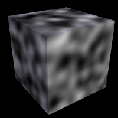

| POV-Ray for Unix version 3.8 | ||||
|
|
||||
| Home | POV-Ray for Unix | POV-Ray Tutorial | POV-Ray Reference | |
3.6 Embellishments
Quick Links:
3.6.1 Texture
The texture statement is an object modifier which describes
what the surface of an object looks like, i.e. its material. Textures are
combinations of pigments, normals, and finishes. Pigment is the color or
pattern of colors inherent in the material. Normal is a method of simulating
various patterns of bumps, dents, ripples or waves by modifying the surface
normal vector. Finish describes the reflective properties of a material.
Note: In previous versions of POV-Ray, the texture also contained
information about the interior of an object. This information has been moved
to a separate object modifier called interior. See
Interior for details.
There are three basic kinds of textures: plain, patterned, and layered. A plain texture consists of a single pigment, an optional normal, and a single finish. A patterned texture combines two or more textures using a block pattern or blending function pattern. Patterned textures may be made quite complex by nesting patterns within patterns. At the innermost levels however, they are made up from plain textures. A layered texture consists of two or more semi-transparent textures layered on top of one another.
Note: Although we call a plain texture plain it may be a very complex texture with patterned pigments and normals. The term plain only means that it has a single pigment, normal, and finish.
The syntax for texture is as follows:
TEXTURE:
PLAIN_TEXTURE | PATTERNED_TEXTURE | LAYERED_TEXTURE
PLAIN_TEXTURE:
texture {
[TEXTURE_IDENTIFIER]
[PNF_IDENTIFIER...]
[PNF_ITEMS...]
}
PNF_IDENTIFIER:
PIGMENT_IDENTIFIER | NORMAL_IDENTIFIER | FINISH_IDENTIFIER
PNF_ITEMS:
PIGMENT | NORMAL | FINISH | TRANSFORMATION
LAYERED_TEXTURE:
NON_PATTERNED_TEXTURE...
PATTERNED_TEXTURE:
texture {
[PATTERNED_TEXTURE_ID]
[TRANSFORMATIONS...]
} |
texture {
PATTERN_TYPE
[TEXTURE_PATTERN_MODIFIERS...]
} |
texture {
tiles TEXTURE tile2 TEXTURE
[TRANSFORMATIONS...]
} |
texture {
material_map {
BITMAP_TYPE "bitmap.ext"
[MATERIAL_MODS...] TEXTURE... [TRANSFORMATIONS...]
}
}
TEXTURE_PATTERN_MODIFIER:
PATTERN_MODIFIER | TEXTURE_LIST |
texture_map { TEXTURE_MAP_BODY }
In the PLAIN_TEXTURE, each of the items are optional but if they are present the TEXTURE_IDENTIFIER must be first. If no texture identifier is given, then POV-Ray creates a copy of the default texture.
Next are optional pigment, normal, and/or finish identifiers which fully override any pigment, normal and finish already specified in the previous texture identifier or default texture. Typically this is used for backward compatibility to allow things like:
texture { MyPigment }
where MyPigment is a pigment identifier.
Finally we have optional pigment, normal or finish statements which modify any pigment, normal and finish already specified in the identifier. If no texture identifier is specified the pigment, normal and finish statements modify the current default values. This is the typical plain texture:
texture {
pigment { MyPigment }
normal { MyNormal }
finish { MyFinish }
scale SoBig
rotate SoMuch
translate SoFar
}
The TRANSFORMATIONS may be interspersed between the pigment, normal and finish statements but are generally specified last. If they are interspersed, then they modify only those parts of the texture already specified. For example:
texture {
pigment { MyPigment }
scale SoBig //affects pigment only
normal { MyNormal }
rotate SoMuch //affects pigment and normal
finish { MyFinish }
translate SoFar //finish is never transformable no matter what.
//Therefore affects pigment and normal only
}
Texture identifiers may be declared to make scene files more readable and to parameterize scenes so that changing a single declaration changes many values. An identifier is declared as follows.
TEXTURE_DECLARATION: #declare IDENTIFIER = TEXTURE | #local IDENTIFIER = TEXTURE
Where IDENTIFIER is the name of the identifier up to 40 characters long and TEXTURE is any valid texture statement. See #declare vs. #local for information on identifier scope.
The sections below describe all of the options available for Pigment, Normal, and Finish. They are the main part of plain textures. There are also separate sections for Patterned Textures and Layered Textures which are made up of plain textures.
Note: The tiles and
material_map versions of patterned textures are obsolete and are only supported for backwards compatibility.
3.6.1.1 Pigment
The color or pattern of colors for an object is defined by a pigment statement. All plain textures must have a pigment. If you do not specify one the default pigment is used. The color you define is the way you want the object to look if fully illuminated. You pick the basic color inherent in the object and POV-Ray brightens or darkens it depending on the lighting in the scene. The parameter is called pigment because we are defining the basic color the object actually is rather than how it looks.
The syntax for pigment is:
PIGMENT:
pigment {
[PIGMENT_IDENTIFIER]
[PIGMENT_TYPE]
[PIGMENT_MODIFIER...]
}
PIGMENT_TYPE:
PATTERN_TYPE | COLOR |
image_map {
BITMAP_TYPE "bitmap.ext" [IMAGE_MAP_MODS...]
}
PIGMENT_MODIFIER:
PATTERN_MODIFIER | COLOR_LIST | PIGMENT_LIST |
color_map { COLOR_MAP_BODY } | colour_map { COLOR_MAP_BODY } |
pigment_map { PIGMENT_MAP_BODY } | quick_color COLOR |
quick_colour COLOR
Each of the items in a pigment are optional but if they are present, they must be in the order shown. Any items after the PIGMENT_IDENTIFIER modify or override settings given in the identifier. If no identifier is specified then the items modify the pigment values in the current default texture. The PIGMENT_TYPE fall into roughly four categories. Each category is discussed the sub-sections which follow. The four categories are solid color and image_map patterns which are specific to pigment statements or color list patterns, color mapped patterns which use POV-Ray's wide selection of general patterns. See Patterns for details about specific patterns.
The pattern type is optionally followed by one or more pigment modifiers. In addition to general pattern modifiers such as transformations, turbulence, and warp modifiers, pigments may also have a COLOR_LIST, PIGMENT_LIST, color_map, pigment_map, and quick_color which are specific to pigments. See Pattern Modifiers for information on general modifiers. The pigment-specific modifiers are described in sub-sections which follow. Pigment modifiers of any kind apply only to the pigment and not to other parts of the texture. Modifiers must be specified last.
A pigment statement is part of a texture specification. However it can be tedious to use a texture statement just to add a color to an object. Therefore you may attach a pigment directly to an object without explicitly specifying that it as part of a texture. For example instead of this:
object { My_Object texture {pigment { color Red } } }
you may shorten it to:
object { My_Object pigment {color Red } }
Doing so creates an entire texture structure with default normal and finish statements just as if you had explicitly typed the full texture {...} around it.
Note: an explicit texture statement is required, if you want to layer pigments.
Pigment identifiers may be declared to make scene files more readable and to parameterize scenes so that changing a single declaration changes many values. An identifier is declared as follows.
PIGMENT_DECLARATION: #declare IDENTIFIER = PIGMENT | #local IDENTIFIER = PIGMENT
Where IDENTIFIER is the name of the identifier up to 40 characters long and PIGMENT is any valid pigment statement. See #declare vs. #local for information on identifier scope.
3.6.1.1.1 Solid Color Pigments
The simplest type of pigment is a solid color. To specify a solid color you simply put a color specification inside a pigment statement. For example:
pigment { color Orange }
A color specification consists of the optional keyword color followed by a color identifier or by a specification of the amount of red, green, blue, filtered and unfiltered transparency in the surface. See section Specifying Colors for more details about colors. Any pattern modifiers used with a solid color are ignored because there is no pattern to modify.
3.6.1.1.4 Color List Pigments
There are four color list patterns: checker, hexagon, brick and object. The result is a pattern of solid colors with distinct edges rather than a blending of colors as with color
mapped patterns. Each of these patterns is covered in more detail in a later section. The syntax is:
COLOR_LIST_PIGMENT:
pigment {brick [COLOR_1, [COLOR_2]] [PIGMENT_MODIFIERS...] }|
pigment {checker [COLOR_1, [COLOR_2]] [PIGMENT_MODIFIERS...]}|
pigment {
hexagon [COLOR_1, [COLOR_2, [COLOR_3]]] [PIGMENT_MODIFIERS...]
}|
pigment {object OBJECT_IDENTIFIER | OBJECT {} [COLOR_1, COLOR_2]}
Each COLOR_n is any valid color specification. There should be a comma between each color or the color keyword should be used as a separator so that POV-Ray can determine where each color specification
starts and ends. The brick and checker pattern expects two colors and hexagon expects three. If an insufficient number of colors is specified then default colors are used.
3.6.1.1.5 Quick Color
When developing POV-Ray scenes it is often useful to do low quality test runs that render faster. The +Q command line switch or Quality INI option can be used to turn off some time consuming color pattern and lighting calculations to speed things up. See Quality Settings for details. However all settings of +Q5 or Quality=5 or lower turns off pigment calculations and creates gray objects.
By adding a quick_color to a pigment you tell POV-Ray what solid color to use for quick renders instead of a patterned pigment. For example:
pigment {
gradient x
color_map {
[0.0 color Yellow]
[0.3 color Cyan]
[0.6 color Magenta]
[1.0 color Cyan]
}
turbulence 0.5
lambda 1.5
omega 0.75
octaves 8
quick_color Neon_Pink
}
This tells POV-Ray to use solid Neon_Pink for test runs at quality +Q5 or lower but to use the turbulent gradient pattern for rendering at +Q6 and higher. Solid color pigments such as
pigment {color Magenta}
automatically set the quick_color to that value. You may override this if you want. Suppose you have 10 spheres on the screen and all are yellow. If you want to identify them individually you could give each a different quick_color. Foe example:
sphere {
<1,2,3>,4
pigment { color Yellow quick_color Red }
}
sphere {
<-1,-2,-3>,4
pigment { color Yellow quick_color Blue }
}
and so on. At +Q6 or higher they will all be yellow but at +Q5 or lower each would be different colors so you could identify them.
The alternate spelling quick_colour is also supported.
3.6.1.1.2 Color Map
Most of the color patterns do not use abrupt color changes of just two or three colors like those in the brick, checker or hexagon patterns. They instead use smooth transitions of many colors that gradually change from one point to the next. The colors are defined in a pigment modifier called a color_map that describes how the pattern blends from one color to the next. New in version 3.8 non-linear color map interpolation support has been added.
Each of the various pattern types available is in fact a mathematical function that takes any x, y, z location and turns it into a number between 0.0 and 1.0 inclusive. That number is used to specify what mix of colors to use from the color map.
The syntax for color_map is as follows:
COLOR_MAP:
color_map { COLOR_MAP_BODY } |
colour_map { COLOR_MAP_BODY }
COLOR_MAP_BODY:
COLOR_MAP_IDENTIFIER |
[BLEND_MAP_MODIFIERS...] COLOR_MAP_ENTRY...
BLEND_MAP_MODIFIERS:
blend_mode BLEND_MODE |
blend_gamma FLOAT
BLEND_MODE:
0 | 1 | 2 | 3
COLOR_MAP_ENTRY:
[ Value COLOR ] |
[ Value_1, Value_2 color COLOR_1 color COLOR_2 ]
Where each Value_n is a float values between 0.0 and 1.0 inclusive and each COLOR_n, are color specifications.
The possible values for blend_mode and their descriptions are as follows:
- 0: Color interpolation is performed in the working gamma space as defined by
assumed_gamma(default) - 1: Color interpolation is performed in the linear color space
- 2: Color interpolation is performed in the gamma space defined by
blend_gamma(default is 2.5) - 3: Chromatic interpolation is performed in the linear space while brightness interpolation is performed in the gamma space defined by
blend_gamma
Note: The [] brackets that are part of the actual COLOR_MAP_ENTRY should not confused with the symbols denoting optional syntax.
In previous versions there had to be from 2 to 256 entries in the map. A Change in version 3.8 has removed the upper restriction. The alternate spelling colour_map can also be used.
Here's a simple example:
sphere {
<0,1,2>, 2
pigment {
gradient x //this is the PATTERN_TYPE
color_map {
[0.1 color Red]
[0.3 color Yellow]
[0.6 color Blue]
[0.6 color Green]
[0.8 color Cyan]
}
}
}
The pattern function gradient x is evaluated and the result is a value from 0.0 to 1.0. If the value is less than the first entry (in this case 0.1) then the first color (red) is used. Values from 0.1 to 0.3 use a blend of red and yellow using linear interpolation of the two colors. Similarly values from 0.3 to 0.6 blend from yellow to blue.
The 3rd and 4th entries both have values of 0.6. This causes an immediate abrupt shift of color from blue to green. Specifically a value that is less than 0.6 will be blue but exactly equal to 0.6 will be green. Moving along, values from 0.6 to 0.8 will be a blend of green and cyan. Finally any value greater than or equal to 0.8 will be cyan.
If you want areas of unchanging color you simply specify the same color for two adjacent entries.
For example:
color_map {
[0.1 color Red]
[0.3 color Yellow]
[0.6 color Yellow]
[0.8 color Green]
}
In this case any value from 0.3 to 0.6 will be pure yellow.
The first syntax version of COLOR_MAP_ENTRY with one float and one color is the current standard. The other double entry version is obsolete and should be avoided. The previous example would look as follows using the old syntax.
color_map {
[0.0 0.1 color Red color Red]
[0.1 0.3 color Red color Yellow]
[0.3 0.6 color Yellow color Yellow]
[0.6.0.8 color Yellow color Green]
[0.8 1.0 color Green color Green]
}
You may use color_map with any patterns except brick, checker, hexagon, object and image_map. You may also declare and use color_map identifiers.
For example:
#declare Rainbow_Colors=
color_map {
[0.0 color Magenta]
[0.33 color Yellow]
[0.67 color Cyan]
[1.0 color Magenta]
}
object {
My_Object
pigment {
gradient x
color_map { Rainbow_Colors }
}
}
See also: Pigment Maps.
3.6.1.1.3 Pigment Map
In addition to specifying blended colors with a color map you may create a blend of pigments using a pigment_map. The syntax for a pigment map is identical to a color map except you specify a pigment in each map
entry and not a color. New in version 3.8 non-linear pigment map interpolation support has been added.
The syntax for pigment_map is as follows:
PIGMENT_MAP:
pigment_map { PIGMENT_MAP_BODY }
PIGMENT_MAP_BODY:
PIGMENT_MAP_IDENTIFIER |
[BLEND_MAP_MODIFIERS...] PIGMENT_MAP_ENTRY...
BLEND_MAP_MODIFIERS:
blend_mode BLEND_MODE |
blend_gamma FLOAT
BLEND_MODE:
0 | 1 | 2 | 3
PIGMENT_MAP_ENTRY:
[ Value PIGMENT_BODY ]
Where Value is a float value between 0.0 and 1.0 inclusive and each PIGMENT_BODY is anything which can be inside a pigment{...} statement. The pigment keyword and {} braces need not be specified.
The possible values for blend_mode and their descriptions are as follows:
- 0: Color interpolation is performed in the working gamma space as defined by
assumed_gamma(default) - 1: Color interpolation is performed in the linear color space
- 2: Color interpolation is performed in the gamma space defined by
blend_gamma(default is 2.5) - 3: Chromatic interpolation is performed in the linear space while brightness interpolation is performed in the gamma space defined by
blend_gamma
Note: The [] brackets that are part of the actual PIGMENT_MAP_ENTRY should not confused with the symbols denoting optional syntax.
In previous versions there had to be from 2 to 256 entries in the map. A Change in version 3.8 has removed the upper restriction.
Here's a simple example:
sphere {
<0,1,2>, 2
pigment {
gradient x //this is the PATTERN_TYPE
pigment_map {
[0.3 wood scale 0.2]
[0.3 Jade] //this is a pigment identifier
[0.6 Jade]
[0.9 marble turbulence 1]
}
}
}
When the gradient x function returns values from 0.0 to 0.3 the scaled wood pigment is used. From 0.3 to 0.6 the pigment identifier Jade is used. From 0.6 up to 0.9 a blend of Jade and a turbulent marble is used. From 0.9 on up only the turbulent marble is used.
Pigment maps may be nested to any level of complexity you desire. The pigments in a map may have color maps or pigment maps or any type of pigment you want. Any entry of a pigment map may be a solid color however if all entries are solid colors you should use a color_map which will render slightly faster.
Entire pigments may also be used with the block patterns checker, hexagon and brick as shown below:
pigment {
checker
pigment { Jade scale .8 }
pigment { White_Marble scale .5 }
}
Note: In the case of block patterns the pigment wrapping is required around the pigment information.
A pigment map is also used with the average pigment type. See Average for details.
You may not use pigment_map or individual pigments with an image_map. See section Texture Maps for an alternative way to do this.
You may declare and use pigment map identifiers but the only way to declare a pigment block pattern list is to declare a pigment identifier for the entire pigment.
See also: Color Maps.
3.6.1.2 Normal
Ray-tracing is known for the dramatic way it depicts reflection, refraction and lighting effects. Much of our perception depends on the reflective properties of an object. Ray tracing can exploit this by playing tricks on our perception to make us see complex details that are not really there.
Suppose you wanted a very bumpy surface on the object. It would be very difficult to mathematically model lots of bumps. We can however simulate the way bumps look by altering the way light reflects off of the surface. Reflection calculations depend on a vector called a surface normal vector. This is a vector which points away from the surface and is perpendicular to it. By artificially modifying (or perturbing) this normal vector you can simulate bumps. This is done by adding an optional normal statement.
Note: Attaching a normal pattern does not really modify the surface. It only affects the way light reflects or refracts at the surface so that it looks bumpy.
The syntax is:
NORMAL:
normal { [NORMAL_IDENTIFIER] [NORMAL_TYPE] [NORMAL_MODIFIER...] }
NORMAL_TYPE:
PATTERN_TYPE Amount |
bump_map { BITMAP_TYPE "bitmap.ext" [BUMP_MAP_MODS...]}
NORMAL_MODIFIER:
PATTERN_MODIFIER | NORMAL_LIST | normal_map { NORMAL_MAP_BODY } |
slope_map{ SLOPE_MAP_BODY } | bump_size Amount |
no_bump_scale Bool | accuracy Float
Each of the items in a normal are optional but if they are present, they must be in the order shown. Any items after the NORMAL_IDENTIFIER modify or override settings given in the identifier. If no identifier is specified then the items modify the normal values in the current default texture. The PATTERN_TYPE may optionally be followed by a float value that controls the apparent depth of the bumps. Typical values range from 0.0 to 1.0 but any value may be used. Negative values invert the pattern. The default value if none is specified is 0.5.
There are four basic types of NORMAL_TYPEs. They are block pattern normals, continuous pattern normals, specialized normals and bump maps. They differ in the types of modifiers you may use with them. The pattern type is optionally followed by one or more normal modifiers. In addition to general pattern modifiers such as transformations, turbulence, and warp modifiers, normals may also have a NORMAL_LIST, slope_map, normal_map, and bump_size which are specific to normals. See Pattern Modifiers for information on general modifiers. The normal-specific modifiers are described in sub-sections which follow. Normal modifiers of any kind apply only to the normal and not to other parts of the texture. Modifiers must be specified last.
Originally POV-Ray had some patterns which were exclusively used for pigments while others were exclusively used for normals. Since POV-Ray 3.0 you can use any pattern for either pigments or normals. For example it is now valid to use ripples as a pigment or wood as a normal type. The patterns bumps, dents, ripples, waves, wrinkles, and bump_map were once exclusively normal patterns which could not be used as pigments. Because these six types use specialized normal modification calculations they cannot have slope_map, normal_map or wave shape modifiers. All other normal pattern types may use them. Because block patterns checker, hexagon, object and brick do not return a continuous series of values, they cannot use these modifiers either. See Patterns for details about specific patterns.
A normal statement is part of a texture specification. However it can be tedious to use a texture statement just to add bumps to an object. Therefore you may attach a normal directly to an object without explicitly specifying that it as part of a texture. For example instead of this:
object {My_Object texture { normal { bumps 0.5 } } }
you may shorten it to:
object { My_Object normal { bumps 0.5 } }
Doing so creates an entire texture structure with default pigment and finish
statements just as if you had explicitly typed the full texture {...} around it. Normal identifiers may be declared to make scene files more readable and to parameterize scenes so that changing a single declaration changes many values. An identifier is declared as follows.
NORMAL_DECLARATION: #declare IDENTIFIER = NORMAL | #local IDENTIFIER = NORMAL
Where IDENTIFIER is the name of the identifier that is at least one character long and NORMAL is any valid normal statement. See #declare vs. #local for information on identifier scope.
Note: In previous versions identifier names were limited to 40 characters. There has been a Change removing that restriction.
3.6.1.2.1 Normal Map
Most of the time you will apply single normal pattern to an entire surface but you may also create a pattern or blend of normals using a normal_map. The syntax for a normal_map is identical to a pigment_map except you specify a normal in each map entry. The syntax for normal_map is as follows:
NORMAL_MAP:
normal_map { NORMAL_MAP_BODY }
NORMAL_MAP_BODY:
NORMAL_MAP_IDENTIFIER | NORMAL_MAP_ENTRY...
NORMAL_MAP_ENTRY:
[ Value NORMAL_BODY ]
Where Value is a float value between 0.0 and 1.0 inclusive and each NORMAL_BODY is anything which can be inside a normal{...} statement. The normal keyword and {} braces need not be specified.
Note: The [] brackets are part of the actual NORMAL_MAP_ENTRY. They are not notational symbols denoting optional parts. The brackets surround each entry in the normal map.
In previous versions there had to be from 2 to 256 entries in the map. A Change in version 3.8 has removed the upper restriction.
For example:
normal {
gradient x //this is the PATTERN_TYPE
normal_map {
[0.3 bumps scale 2]
[0.3 dents]
[0.6 dents]
[0.9 marble turbulence 1]
}
}
When the gradient x function returns values from 0.0 to 0.3 then the scaled bumps normal is used. From 0.3 to 0.6 dents pattern is used. From 0.6 up to 0.9 a blend of dents and a turbulent marble is used. From 0.9 on up only the turbulent marble is used.
Normal maps may be nested to any level of complexity you desire. The normals in a map may have slope maps or normal maps or any type of normal you want.
A normal map is also used with the average normal type. See Average for details.
Entire normals in a normal list may also be used with the block patterns such as checker, hexagon and brick. For example:
normal {
checker
normal { gradient x scale .2 }
normal { gradient y scale .2 }
}
Note: In the case of block patterns the normal wrapping is required around the normal information.
You may not use normal_map or individual normals with a bump_map. See section Texture Maps for an alternative way to do this.
You may declare and use normal map identifiers but the only way to declare a normal block pattern list is to declare a normal identifier for the entire normal.
3.6.1.2.2 Slope Map
A slope_map is a normal pattern modifier which gives the user a great deal of control over the exact shape of the bumpy features. Each of the various pattern types available is in fact a mathematical function that takes any x, y, z location and turns it into a number between 0.0 and 1.0 inclusive. That number is used to specify where the various high and low spots are. The slope_map lets you further shape the contours. It is best illustrated with a gradient normal pattern. For example:
plane{ z, 0
pigment{ White }
normal { gradient x }
}
Gives a ramp wave pattern that looks like small linear ramps that climb from the points at x=0 to x=1 and then abruptly drops to 0 again to repeat the ramp from x=1 to x=2. A slope map turns this simple linear ramp into almost any wave shape you want. The syntax is as follows:
SLOPE_MAP:
slope_map { SLOPE_MAP_BODY }
SLOPE_MAP_BODY:
SLOPE_MAP_IDENTIFIER | SLOPE_MAP_ENTRY...
SLOPE_MAP_ENTRY:
[ Value, <Height, Slope> ]
Note: The [] brackets are part of the actual SLOPE_MAP_ENTRY. They are not notational symbols denoting optional parts. The brackets surround each entry in the slope map.
In previous versions there had to be from 2 to 256 entries in the map. A Change in version 3.8 has removed the upper restriction.
Each Value is a float value between 0.0 and 1.0 inclusive and each <Height, Slope> is a 2 component vector such as <0,1> where the first value represents the apparent height of the wave and the second value represents the slope of the wave at that point. The height should range between 0.0 and 1.0 but any value could be used.
The slope value is the change in height per unit of distance. For example a slope of zero means flat, a slope of 1.0 means slope upwards at a 45 degree angle and a slope of -1 means slope down at 45 degrees. Theoretically a slope straight up would have infinite slope. In practice, slope values should be kept in the range -3.0 to +3.0. Keep in mind that this is only the visually apparent slope. A normal does not actually change the surface.
For example here is how to make the ramp slope up for the first half and back down on the second half creating a triangle wave with a sharp peak in the center.
normal {
gradient x // this is the PATTERN_TYPE
slope_map {
[0 <0, 1>] // start at bottom and slope up
[0.5 <1, 1>] // halfway through reach top still climbing
[0.5 <1,-1>] // abruptly slope down
[1 <0,-1>] // finish on down slope at bottom
}
}
The pattern function is evaluated and the result is a value from 0.0 to 1.0. The first entry says that at x=0 the apparent height is 0 and the slope is 1. At x=0.5 we are at height 1 and slope is still up at 1. The third entry also specifies that at x=0.5 (actually at some tiny fraction above 0.5) we have height 1 but slope -1 which is downwards. Finally at x=1 we are at height 0 again and still sloping down with slope -1.
Although this example connects the points using straight lines the shape is actually a cubic spline. This example creates a smooth sine wave.
normal {
gradient x // this is the PATTERN_TYPE
slope_map {
[0 <0.5, 1>] // start in middle and slope up
[0.25 <1.0, 0>] // flat slope at top of wave
[0.5 <0.5,-1>] // slope down at mid point
[0.75 <0.0, 0>] // flat slope at bottom
[1 <0.5, 1>] // finish in middle and slope up
}
}
This example starts at height 0.5 sloping up at slope 1. At a fourth of the way through we are at the top of the curve at height 1 with slope 0 which is flat. The space between these two is a gentle curve because the start and end slopes are different. At half way we are at half height sloping down to bottom out at 3/4ths. By the end we are climbing at slope 1 again to complete the cycle. There are more examples in slopemap.pov in the sample scenes.
A slope_map may be used with any pattern except brick, checker, object, hexagon, bumps, dents, ripples, waves, wrinkles and bump_map.
You may declare and use slope map identifiers. For example:
#declare Fancy_Wave =
slope_map { // Now let's get fancy
[0.0 <0, 1>] // Do tiny triangle here
[0.2 <1, 1>] // down
[0.2 <1,-1>] // to
[0.4 <0,-1>] // here.
[0.4 <0, 0>] // Flat area
[0.5 <0, 0>] // through here.
[0.5 <1, 0>] // Square wave leading edge
[0.6 <1, 0>] // trailing edge
[0.6 <0, 0>] // Flat again
[0.7 <0, 0>] // through here.
[0.7 <0, 3>] // Start scallop
[0.8 <1, 0>] // flat on top
[0.9 <0,-3>] // finish here.
[0.9 <0, 0>] // Flat remaining through 1.0
}
object{ My_Object
pigment { White }
normal {
wood
slope_map { Fancy_Wave }
}
}
3.6.1.2.2.1 Normals, Accuracy
Surface normals that use patterns that were not designed for use with normals (anything other than bumps, dents, waves, ripples, and wrinkles) uses a slope_map whether you specify one or not. To create a perturbed normal from a pattern, POV-Ray samples the pattern at four points in a pyramid surrounding the desired point to determine the gradient of the pattern at the center of the pyramid. The distance that these points are from the center point determines the accuracy of the approximation. Using points too close together causes floating-point inaccuracies. However, using points too far apart can lead to artefacts as well as smoothing out features that should not be smooth.
Usually, points very close together are desired. POV-Ray currently uses a delta or accuracy distance of 0.02. Sometimes it is necessary to decrease this value to get better accuracy if you are viewing a close-up of the texture. Other times, it is nice to increase this value to smooth out sharp edges in the normal (for example, when using a 'solid' crackle pattern). For this reason, a new property, accuracy, has been added to normals. It only makes a difference if the normal uses a slope_map (either specified or implied).
You can specify the value of this accuracy (which is the distance between the sample points when determining the gradient of the pattern for slope_map) by adding accuracy <float> to your normal. For all patterns, the default is 0.02.
For more on slope_map see the Slope Map Tutorial
3.6.1.2.3 Bump Map
When all else fails and none of the normal pattern types meets your needs you can use a bump_map to wrap a 2-D bit-mapped bump pattern around your 3-D objects.
Instead of placing the color of the image on the shape like an image_map a bump_map perturbs the surface normal based on the color of the image at that point. The result looks like the image has been embossed into the surface. By default, a bump map uses the brightness of the actual color of the pixel. Colors are converted to gray scale internally before calculating height. Black is a low spot, white is a high spot. The image's index values may be used instead. See the sections Use_Index
and Use_Color below.
3.6.1.2.3.1 Specifying a Bump Map
The syntax for a bump_map is:
BUMP_MAP:
normal {
bump_map {
BITMAP_TYPE "bitmap.ext" [gamma GAMMA] [premultiplied BOOL]
[BUMP_MAP_MODs...]
}
[NORMAL_MODFIERS...]
}
BITMAP_TYPE:
exr | gif | hdr | iff | jpeg | pgm | png | ppm | sys | tga | tiff
GAMMA:
Float_Value | srgb | bt709 | bt2020
BUMP_MAP_MODS:
map_type Type | once | interpolate Type | use_color |
use_colour | bump_size Value
After the required BITMAP_TYPE keyword is a string expression containing the name of a bitmapped bump file of the specified type. Several optional modifiers may follow the file specification. The modifiers are described below.
Note: Earlier versions of POV-Ray allowed some modifiers before the BITMAP_TYPE but that syntax is being phased out in favor of the syntax described here.
Filenames specified in the bump_map statements will be searched for in the home (current) directory first and, if not found, will then be searched for in directories specified by any +L or Library_Path options active. This would facilitate keeping all your bump maps files in a separate sub-directory and giving a Library_Path option to specify where your library of bump maps are. See Library Paths for details.
By default, the bump pattern is mapped onto the x-y-plane. The bump pattern is projected onto the object as though there were a slide projector somewhere in the -z-direction. The pattern exactly fills the square area from (x,y) coordinates (0,0) to (1,1) regardless of the pattern's original size in pixels. If you would like to change this default you may translate, rotate or scale the pigment or texture to map it onto the object's surface as desired. If you would like to change this default orientation you may translate, rotate or scale the pigment or texture to map it onto the object's surface as desired.
While POV-Ray will normally interpret the bump map input file as a container of linear data irregardless of file type, this can be overridden for any individual bump map input file by specifying gamma GAMMA immediately after the file name. For example:
bump_map {
jpeg "foobar.jpg" gamma 1.8
}
This will cause POV-Ray to perform gamma adjustment or decoding on the input file data before building the bump map. Alternatively to a numerical value, srgb may be specified to denote that the file is pre-corrected or encoded using the sRGB transfer function instead of a power-law gamma function. New in version 3.8, other valid special values are bt709 and bt2020, denoting that the file is encoded or pre-corrected using the ITU-R BT.709 or BT.2020 transfer function, respectively. See section Gamma Handling for more details.
The file name is optionally followed by one or more BITMAP_MODIFIERS. The bump_size, use_color and use_index modifiers are specific to bump maps and are discussed in the following sections. See the section Bitmap Modifiers where the generic bitmap modifiers map_type, once and interpolate are described.
3.6.1.2.3.2 Bump_Size
The relative bump size can be scaled using the bump_size modifier. The bump size number can be any number other than 0 but typical values are from about 0.1 to as high as 4.0 or 5.0.
normal {
bump_map {
gif "stuff.gif"
bump_size 5.0
}
}
Originally bump_size could only be used inside a bump map but it can now be used with any normal. Typically it is used to override a previously defined size. For example:
normal {
My_Normal //this is a previously defined normal identifier
bump_size 2.0
}
3.6.1.2.3.3 Use_Index and Use_Color
Usually the bump map converts the color of the pixel in the map to a gray scale intensity value in the range 0.0 to 1.0 and calculates the bumps based on that value. If you specify use_index, the bump map uses the color's palette number to compute as the height of the bump at that point. So, color number 0 would be low and color number 255 would be high (if the image has 256 palette entries). The actual color of the pixels doesn't matter when using the index. This option is only available on
palette based formats. The use_color keyword may be specified to explicitly note that the color methods should be used instead. The alternate spelling use_colour is also valid. These modifiers may only be used inside the bump_map statement.
3.6.1.2.4 Scaling normals
When scaling a normal, or when scaling an object after a normal is applied to it, the depth of the normal is affected by the scaling. This is not always wanted. If you want to turn off bump scaling for a texture or normal, you can do this by adding the keyword no_bump_scale to the texture's or normal's modifiers. This modifier will get passed on to all textures or normals contained in that texture or normal. Think of this like the way no_shadow gets passed on to objects contained in a CSG.
It is also important to note that if you add no_bump_scale to a normal or texture that is contained within another pattern (such as within a texture_map or normal_map), then the only scaling that will be ignored is the scaling of that texture or normal. Scaling of the parent texture or normal or of the object will affect the depth of the bumps, unless no_bump_scale is specified at the top-level of the texture (or normal, if the normal is not wrapped in a texture).
Note: See the section Using the Alpha Channel for some important information regarding the use of bump_map.
3.6.1.3 Finish
How does light reflect, what happens in shadows and what kind of highlights are visible? The finish properties of a surface can greatly affect its appearance.
The syntax for finish is as follows:
FINISH:
finish { [FINISH_IDENTIFIER] [FINISH_ITEMS...] }
FINISH_ITEMS:
fresnel FLOAT
ambient COLOR | diffuse [albedo] Amount [, Amount] |
emission COLOR | brilliance Amount | phong [albedo] Amount | phong_size Amount |
specular [albedo] Amount | roughness Amount |
metallic [Amount] | reflection COLOR |
crand Amount | conserve_energy BOOL |
reflection { Color_Reflecting_Min [REFLECTION_ITEMS...] } |
subsurface { translucency COLOR } |
irid { Irid_Amount [IRID_ITEMS...] |
use_alpha BOOL
}
REFLECTION_ITEMS:
COLOR_REFLECTION_MAX | fresnel BOOL |
falloff FLOAT_FALLOFF | exponent FLOAT_EXPONENT |
metallic FLOAT_METALLIC
IRID_ITEMS:
thickness Amount | turbulence Amount
Note: In previous versions identifier names were limited to 40 characters. There has been a Change removing that restriction.
The FINISH_IDENTIFIER is optional but should proceed all other items. Any items after the FINISH_IDENTIFIER modify or override settings given in the FINISH_IDENTIFIER. If no identifier is specified then the items modify the finish values in the current default texture.
Note: Transformations are not allowed inside a finish because finish items cover the entire surface uniformly. Each of the FINISH_ITEMS listed above is described in sub-sections below.
In earlier versions of POV-Ray, the refraction, ior, and caustics keywords were part of the finish statement but they are now part of the interior statement. They are still supported under finish for backward compatibility but the results may not be 100% identical to previous versions. See Why are Interior and Media Necessary? for more details.
A finish statement is part of a texture specification. However it can be tedious to use a texture statement just to add a highlights or other lighting properties to an object. Therefore you may attach a finish directly to an object without explicitly specifying it as part of a texture. For example instead of this:
object { My_Object texture { finish { phong 0.5 } } }
you may shorten it to:
object { My_Object finish { phong 0.5 } }
Doing so creates an entire texture structure with default pigment and normal
statements just as if you had explicitly typed the full texture {...} around it.
Finish identifiers may be declared to make scene files more readable and to parameterize scenes so that changing a single declaration changes many values. An identifier is declared as follows.
FINISH_DECLARATION: #declare IDENTIFIER = FINISH | #local IDENTIFIER = FINISH
Where IDENTIFIER is the name of the identifier and FINISH is any valid finish statement. See #declare vs. #local for information on identifier scope.
Note: For more physical realism a Change in version 3.8 expands fresnel angle-dependent attenuation use to now include the ambient, diffuse, emission, specular and phong components. The details are as follows:
When used directly in the finish block the fresnel keyword activates Fresnel effects for all of the ambient, diffuse, emission, specular and phong attributes. At steep viewing and/or light source angles it decreases the brightness of the specular and phong components. At shallow viewing angles and/or light source angles it instead decreases the brightness of the ambient, diffuse and emission components. The fresnel parameter can also be set to an intermediate value, in order to allow for the approximate modelling of anti-reactive coatings.
In the following example the diffuse, phong and specular syntax, which is normally used to specify the effective bi-hemispheric albedo of that respective component, does not work as advertised when finish-level fresnel is set to non-zero. Instead, diffuse will specify the albedo that the object would exhibit if it had a refractive index of 1, while phong and specular will specify the albedo that the object would exhibit if it had an infinitely large refractive index. As a result, while you would normally want to choose parameters such that D_Value + P_Value + S_Value <= 1. With finish-level fresnel set to a non-zero value you would want to choose parameters such that D_Value <= 1 and P_Value + S_Value <= 1. For optimal realism, you should specify the settings as noted below, and control the brightness of the diffuse component via the layer pigment.
// general values
finish {
diffuse albedo D_Value
phong albedo P_Value
specular albedo S_Value
}
// optimal realism
finish {
diffuse albedo 1
phong albedo 0
specular albedo 1
}
Setting finish-level fresnel will automatically activate (if set to a non-zero value) or deactivate (if set to zero) the reflection-level fresnel parameter. This can be overridden by specifying the reflection parameters after the finish-level fresnel parameter. For optimal realism, the maximum reflection should be set equal to the finish-level fresnel parameter, while the minimum reflection should be set to zero.
When subsurface light transport is enabled, the finish-level fresnel parameter will have no effect on the diffuse attribute; instead, the feature will always act as if the parameter had been set to 1.
Radiosity-based illumination currently does not account for the Fresnel effect on incoming light, regardless of the finish-level fresnel parameter.
New in version 3.8 you can now specify use_alpha in the finish block. If set to off, the default and also the old behavior, then pigment filter and transmit only hide the surface's diffuse, ambient and emission components. If set to on then pigment filter and transmit also hide the surface's highlights and specular reflection.
3.6.1.3.1 Ambient
The light you see in dark shadowed areas comes from diffuse reflection off of other objects. This light cannot be modeled directly using ray-tracing, however, the radiosity feature can do a realistic approximation at the cost of higher render times. For most scenes, especially in-door scenes, this is will greatly improve the end result.
The classic way to simulate Ambient Lighting in shadowed areas is to assume that light is scattered everywhere in the room equally. The effect can simply be calculated by adding a small amount of light to each texture, whether or not a light is actually shining on that texture. This renders very fast, but has the disadvantage that shadowed areas look flat.
Note: Without radiosity ambient light does not account for the color of surrounding objects. For instance, when entering a room where the walls, floor and ceiling are red, your white clothing will look pink from the reflected light. POV-Ray's ambient shortcut does not account for this.
The ambient keyword controls the amount of ambient light used for each object. In some situations the ambient light might also be tinted. In that case a color value can be specified as in the example below:
finish { ambient rgb <0.3,0.1,0.1> } //a pink ambient
If all color components are equal, a single float value may be used. In other words a single float value of 0.3 is treated as <0.3,0.3,0.3>. The default value is 0.1, which gives very little ambient light. As with light sources, physically meaningful values are typically greater than 0, but negative values work too. Lastly the value can also be arbitrarily high to simulate a very bright light.
You may also specify the overall ambient light level used when calculating the ambient lighting of an object using the global ambient_light setting.
The total light defined as: Ambient = Finish_Ambient * Global_Ambient_Light_Source. See also: Ambient Light for more details.
Ambient light affects both shadowed and non-shadowed areas, so if you turn up the ambient value, you may want to turn down the diffuse and reflection values.
There has been a Change as of version 3.7 in that the ambient mechanism is now automatically turned off when radiosity is enabled, provided that #version is set to 3.7 or higher. This will allow use of the same material definitions in both radiosity and non-radiosity scenes. As a consequence, the practice of co-opting ambient to model glowing materials will no longer work in radiosity scenes and is therefore strongly discouraged altogether; instead, the new emission keyword has been added specifically for this purpose.
Note: Specular reflected indirect illumination like a flashlight shining in a mirror cannot modeled by either ambient light or radiosity. Use photons instead.
There has been an important Change in version 3.8 regarding the default ambient setting. When #version is set as either the first statement of the scene file or via command-line option and the version is 3.8 or greater the default setting is now ambient 0 as opposed to the ambient 0.1 value used in previous versions.
3.6.1.3.2 Emission
The emission keyword New in version 3.7 can be used to model glowing materials, eliminating the need to co-opt ambient for this purpose.
The syntax and effect are virtually identical to ambient, except that emission is unaffected by the global ambient_light parameter, and is not turned off when using radiosity.
See also: Ambient
3.6.1.3.3 Diffuse Reflection Items
When light reflects off of a surface the laws of physics say that it should leave the surface at the exact same angle it came in. This is similar to the way a billiard ball bounces off a bumper of a pool table. This perfect reflection is called specular reflection. However only very smooth polished surfaces reflect light in this way. Most of the time, light reflects and is scattered in all directions by the roughness of the surface. This scattering is called diffuse reflection because the light diffuses or spreads in a variety of directions. It accounts for the majority of the reflected light we see.
3.6.1.3.3.1 Diffuse
The keyword diffuse is used in a finish statement to control how much of the light coming directly from any light sources is reflected via diffuse reflection. The optional keyword albedo can be used right after diffuse to specify that the parameter is to be taken as the total diffuse/specular reflectance, rather than peak reflectance.
Note: When brilliance is equal to 1 albedo will have no effect on the diffuse parameter.
For example:
finish { diffuse albedo 0.7 fresnel }
Means that 70% of the light seen comes from direct illumination from light sources. The default value for diffuse is 0.6.
To model thin, diffusely-translucent objects (e.g. paper, curtains, leaves etc.), an optional 2nd float parameter has been added to the diffuse finish statement to control the effect of illumination from the back of the surface. The default value is 0.0, i.e. no diffuse backside illumination. For realistic results, the sum of both parameters should be between 0.0 and 1.0, and the 2nd parameter should be the smaller of the two.
Note: This feature is currently experimental and may be subject to change. In particular, the syntax as well as inter-operation with double_illuminate, multi-layered textures or conserve_energy are still under investigation.
A new sample scene, ~scenes/advanced/diffuse_back.pov, has been provided to illustrate this new feature.
3.6.1.3.3.2 Brilliance
The amount of direct light that diffuses from an object depends upon the angle at which it hits the surface. When light hits at a shallow angle it illuminates less. When it is directly above a surface it illuminates more. The brilliance keyword can be used in a finish statement to vary the way light falls off depending upon the angle of incidence. This controls the tightness of the basic diffuse illumination on objects and slightly adjusts the appearance of surface shininess. Objects may appear more metallic by increasing their brilliance. The default value is 1.0. Higher values from 5.0 to about 10.0 cause the light to fall off less at medium to low angles. There are no limits to the brilliance value. Experiment to see what works best for a particular situation. This is best used in concert with highlighting.
3.6.1.3.3.3 Crand Graininess
Very rough surfaces, such as concrete or sand, exhibit a dark graininess in their apparent color. This is caused by the shadows of the pits or holes in the surface. The crand keyword can be added to a finish to cause a minor random darkening in the diffuse reflection of direct illumination. Typical values range from crand 0.01 to crand 0.5 or higher. The default value is 0. For example:
finish { crand 0.05 }
The grain or noise introduced by this feature is applied on a pixel-by-pixel basis. This means that it will look the same on far away objects as on close objects. The effect also looks different depending upon the resolution you are using for the rendering.
Note: The crand should not be used when rendering animations. This is the one of a few truly random features in POV-Ray and will produce an annoying flicker of flying pixels on any textures animated with a crand value. For these reasons it is not a very accurate way to model the rough surface effect.
3.6.1.3.3.4 Subsurface Light Transport
The subsurface light transport feature, also know as subsurface scattering, is enabled ONLY when a global_settings subsurface block is present. For example, to enable SSLT and use it's default settings, you can specify an empty block.
global_settings {
subsurface {}
}
To activate SSLT for a particular object you will also need to add the following statement to its finish block.
material {
texture {
pigment { PIGMENT }
finish {
...
subsurface { translucency COLOR }
}
}
interior { ior FLOAT }
}
The pigment determines the SSLT material's overall appearance when applied to an object with sufficiently large structures. The translucency color, which can alternatively be a float, determines the strength of the subsurface light transport effect. The material's index of refraction also affects the appearance, and is essential for SSLT materials, but doesn't generate a warning at parse time if omitted.
Note: The effect doesn't scale with the object, and values may be greater than 1.0
To adjust materials to the dimensions of your scene, you should first determine the proper mm_per_unit setting (it should always match the actual scale of the object) to use in the global settings block, then adjust the materials translucency value.
Note: Any effect that can be achieved by changing mm_per_unit can also be achieved by adjusting the translucency value of materials.
The mm_per_unit algorithm is designed to give realistic results at a scale of 10 mm per POV-Ray unit by default. For other scales, you can place the following statement in the global_settings block:
mm_per_unit INT
Hint: Using these scaling examples as a guide you can easily come up with a suitable setting.
- 1 cm per unit, set it to 10 (the default)
- 1 inch per unit, set it to 25.4
- 1 m per unit, set it to 1000
To tune the algorithm for quality or performance, the number of samples for the diffuse scattering and single-scattering approximation, respectively, can be specified by placing the following statement in the global_settings section. Both values default is 50.
subsurface { samples INT, INT }
See the sample SSLT scene in ~scenes/subsurface/subsurface.pov for more information. See also this PDF document, A Practical Model for Subsurface Light Transport, for more in depth information about SSLT, including some sample values to use when defining new materials.
To specify whether subsurface light transport effects should be applied to incoming radiosity based diffuse illumination, you should place the following in the global settings subsurface block:
global_settings {
subsurface { radiosity BOOL }
}
If this setting is off, the default, subsurface light transport effects will only be applied to direct illumination from classic light sources. Setting this feature to on will improve realism especially for materials with high translucency, but at a significant cost in rendering time.
See the section Subsurface and Radiosity for additional configuration information.
Note: Subsurface scattering is disabled in all quality levels except +Q9 or higher.
Warning: Be advised that the subsurface scattering feature is still experimental. These conditions, and possibly others, can apply. Usage and syntax is also subject to change!
- Incorrect use may result in hard crashes instead of parse warnings.
- Pigments having any zero color components currently doesn't play nice with SSLT. For example use
rgb <1,0.01,0.01>instead ofrgb <1,0,0>as color literals or when declaring pigment identifiers. - A diffuse finish attribute of zero can also cause povray to throw an assertion failure.
- Unions of overlapping objects will probably give unexpected results, however merge should work.
- Mesh objects need to be closed (not perfectly) for realism.
- To avoid seams between objects, they currently must share a common interior. It's not sufficient to have interiors with identical parameters, or even instances of the same defined interior. The only way to overcome this is to specify the interior in the parent CSG rather than the individual primitives. For the desired results:
- REMOVE any interior statements from the material.
- ADD the interior statement to the union or merge.
- For each part that needs a different
ior(e.g. eyelashes or teeth) add an individual interior statement.
3.6.1.3.4 Highlights
Highlights are the bright spots that appear when a light source reflects off of a smooth object. They are a blend of specular reflection and diffuse reflection. They are specular-like because they depend upon viewing angle and illumination angle. However they are diffuse-like because some scattering occurs. In order to exactly model a highlight you would have to calculate specular reflection off of thousands of microscopic bumps called micro facets. The more that micro facets are facing the viewer the shinier the object appears and the tighter the highlights become. POV-Ray uses two different models to simulate highlights without calculating micro facets. They are the specular and Phong models.
Note: Specular and phong highlights are not mutually exclusive. It is possible to specify both and they will both take effect. Normally, however, you will only specify one or the other.
3.6.1.3.4.1 Phong Highlights
The phong keyword in the finish statement controls the amount of phong highlighting on the object. It causes bright shiny spots on the object that are the color of the light source being reflected. The phong method measures the average of the facets facing in the mirror direction from the light sources to the viewer.
Phong's value is typically from 0.0 to 1.0, where 1.0 causes complete saturation to the light source's color at the brightest area (center) of the highlight. The default value is 0.0 and gives no highlight. The size of the highlight spot is defined by the phong_size value. The larger the phong size the tighter, or smaller, the highlight and the shinier the appearance. The smaller the phong size the looser, or larger, the highlight and the less glossy the appearance. Typical values range from 1.0 (very dull) to 250 (highly polished) though any values may be used. The default value is 40 (plastic) if phong_size is not specified.
The optional keyword albedo can be used right after phong to specify that the parameter is to be taken as the total diffuse/specular reflectance, rather than peak reflectance.
For example:
finish { phong albedo 0.9 phong_size 60 fresnel }
If phong is not specified phong_size has no effect.
3.6.1.3.4.2 Specular Highlight
The specular keyword in a finish statement produces a highlight which is very similar to phong highlighting but it uses slightly different model. The specular model more closely resembles real specular reflection and provides a more credible spreading of the highlights occurring near the object horizons.
The specular value is typically from 0.0 to 1.0, where 1.0 causes complete saturation to the light source's color at the brightest area (center) of the highlight. The default value is 0.0 and gives no highlight. The size of the spot is defined by the value given the roughness keyword. Typical values range from 1.0 (very rough - large highlight) to 0.0005 (very smooth - small highlight). The default value, if roughness is not specified, is 0.05 (plastic).
It is possible to specify wrong values for roughness that will generate an error. Do not use 0! If you get errors, check to see if you are using a very, very small roughness value that may be causing the error.
The optional keyword albedo can be used right after specular to specify that the parameter is to be taken as the total diffuse/specular reflectance, rather than peak reflectance.
For example:
finish { specular albedo 0.9 roughness 0.02 fresnel }
If specular is not specified roughness has no effect.
Note: When light is reflected by a surface such as a mirror, it is called specular reflection however such reflection is not controlled by the specular keyword. The reflection keyword controls mirror-like specular reflection.
3.6.1.3.4.3 Metallic Highlight Modifier
The keyword metallic may be used with phong or specular highlights. This keyword indicates that the color of the highlights will be calculated by an empirical function that models the reflectivity of metallic
surfaces.
Normally highlights are the color of the light source. Adding this keyword filters the highlight so that white light reflected from a metallic surface takes the color specified by the pigment
The metallic keyword may optionally be follow by a numeric value to specify the influence the amount of the effect. If no keyword is specified, the default value is zero. If the keyword is specified without a value, the default value is 1.
For example:
finish {
phong 0.9
phong_size 60
metallic
}
If phong or specular keywords are not specified then metallic has no effect.
3.6.1.3.5 Specular Reflection
When light does not diffuse and it does reflect at the same angle as it hits an object, it is called specular reflection. Such mirror-like reflection is controlled by the reflection {...} block in a finish statement.
Syntax:
finish {
reflection {
[COLOR_REFLECTION_MIN,] COLOR_REFLECTION_MAX
[fresnel BOOL]
[falloff FLOAT_FALLOFF]
[exponent FLOAT_EXPONENT]
[metallic FLOAT_METALLIC]
}
}
[interior { ior IOR }]
The simplest use would be a perfect mirror:
finish { reflection {1.0} ambient 0 diffuse 0 }
This gives the object a mirrored finish. It will reflect all other elements in the scene. Usually a single float value is specified after the keyword even though the syntax calls for a color. For example a float value of 0.3 gets promoted to the full color vector <0.3,0.3,0.3,0.3,0.3> which is acceptable because only the red, green and blue parts are used.
The value can range from 0.0 to 1.0. By default there is no reflection.
Note: You should be aware that:
- Adding reflection to a texture makes it take longer to render because additional rays must be traced.
- The reflected light may be tinted by specifying a color rather than a float. For example,
finish { reflection rgb <1,0,0> }gives a red mirror that only reflects red light. - Although such reflection is called specular it is not controlled by the
specularkeyword. That keyword controls a specular highlight. - The old syntax for simple reflection:
reflection COLORandreflection_exponent FLOAT(without braces) is still supported for backward compatibility.
falloff sets a falloff exponent in the variable reflection. This is the exponent telling how fast the reflectivity will fall off, i.e. linear, squared, cubed, etc.
The metallic keyword is similar in function to the metallic keyword used for highlights in finishes: it simulates the reflective properties of metallic surfaces, where reflected light takes on the colour of the surface. When metallic is used, the reflection color is multiplied by the pigment color at each point. You can specify an optional float value, which is the amount of influence the metallic keyword has on the reflected color. metallic uses the fresnel equation so that the color of the light is reflected at glancing angles, and the color of the metal is reflected for angles close to the surface's normal.
exponent
This property predates the introduction of proper gamma handling. People found that it was difficult to model partially reflective surfaces in a realistic way, as middle and lower brightness objects typically looked too bright when reflected. As a means to work around the phenomenon the optional exponent keyword was added, producing non-linear reflection intensities. The default value of 1.0 produces a linear curve. Lower values darken middle and low intensities and keep high intensity reflections bright. While this feature may still be used for artistic effects, it is strongly discouraged for renders aiming at realism. The original phenomenon is well understood by now, and using assumed_gamma 1.0 as recommended will avoid it entirely.
Variable reflection
Many materials, such as water, ceramic glaze, and linoleum are more reflective when viewed at shallow angles. This can be simulated by also specifying a minimum reflection in the reflection {...} statement.
For example:
finish { reflection { 0.03, 1 }}
uses the same function as the standard reflection, but the first parameter sets the minimum reflectivity.
It could be a color vector or a float (which is automatically promoted to a gray vector). This minimum
value is how reflective the surface will be when viewed from a direction parallel to its normal.
The second parameter sets the maximum reflectivity, which could also be a color vector or a float
(which is automatically promoted to a gray vector). This maximum parameter is how reflective the
surface will be when viewed at a 90-degree angle to its normal.
Note: You can make maximum reflection less than minimum reflection if you want, although the result is something that does not occur in nature.
When adding the fresnel keyword, the Fresnel reflectivity function is used instead of
standard reflection. It calculates reflectivity using the finish's IOR. So with a fresnel reflection_type
an interior { ior IOR } statement is required, even with opaque pigments. Remember that
in real life many opaque objects have a thin layer of transparent glaze on their surface, and it
is the glaze (which -does- have an IOR) that is reflective.
3.6.1.3.6 Conserve Energy for Reflection
One of the features in POV-Ray is variable reflection, including realistic Fresnel reflection (see the section on Variable Reflection). Unfortunately, when this is coupled with constant transmittance, the texture can look unrealistic. This unreal-ism is caused by the scene breaking the law of conservation of energy. As the amount of light reflected changes, the amount of light transmitted should also change (in a give-and-take relationship).
This can be achieved by adding the conserve_energy keyword
to the object's finish {}.
When conserve_energy is enabled, POV-Ray will multiply the amount filtered
and transmitted by what is left over from reflection (for example, if reflection is 80%,
filter/transmit will be multiplied by 20%).
3.6.1.3.7 Iridescence
Iridescence, or Newton's thin film interference, simulates
the effect of light on surfaces with a microscopic transparent film overlay.
The effect is like an oil slick on a puddle of water or the rainbow hues of a
soap bubble. This effect is controlled by the irid statement
specified inside a finish statement.
This parameter modifies the surface color as a function of the angle between the light source and the surface. Since the effect works in conjunction with the position and angle of the light sources to the surface it does not behave in the same ways as a procedural pigment pattern.
The syntax is:
IRID:
irid { Irid_Amount [IRID_ITEMS...] }
IRID_ITEMS:
thickness Amount | turbulence Amount
The required Irid_Amount parameter is the
contribution of the iridescence effect to the overall surface color. As a
rule of thumb keep to around 0.25 (25% contribution) or less, but experiment.
If the surface is coming out too white, try lowering the
diffuse and possibly the ambient values of the
surface.
The thickness keyword represents the film's thickness. This
is an awkward parameter to set, since the thickness value has no relationship
to the object's scale. Changing it affects the scale or
busy-ness of the effect. A very thin film will have a high frequency of
color changes while a thick film will have large areas of color. The default
value is zero.
The thickness of the film can be varied with the turbulence
keyword. You can only specify the amount of turbulence with iridescence. The
octaves, lambda, and omega values are internally set and are not adjustable
by the user at this time. This parameter varies only a single value: the
thickness. Therefore the value must be a single float value. It cannot be a
vector as in other uses of the turbulence keyword.
In addition, perturbing the object's surface normal through the use of bump patterns will affect iridescence.
For the curious, thin film interference occurs because, when the ray hits the surface of the film, part of the light is reflected from that surface, while a portion is transmitted into the film. This subsurface ray travels through the film and eventually reflects off the opaque substrate. The light emerges from the film slightly out of phase with the ray that was reflected from the surface.
This phase shift creates interference, which varies with the wavelength of the component colors, resulting in some wavelengths being reinforced, while others are cancelled out. When these components are recombined, the result is iridescence. See also the global setting Irid_Wavelength for additional information.
Note: The version 3.7 iridescence feature has had a major overhaul. The syntax remains the same, however, both the thickness and amount values are now specified in microns. Consequently, iridescence effects will vary from previous versions.
The concept used for this feature came from the book Fundamentals of Three-Dimensional Computer Graphics by Alan Watt (Addison-Wesley).
3.6.1.4 Halo
Earlier versions of POV-Ray used a feature called halo to
simulate fine particles such as smoke, steam, fog, or flames. The
halo statement was part of the texture statement. This
feature has been discontinued and replaced by the interior and
media statements which are object modifiers outside the
texture statement.
See Why are Interior and Media Necessary? for a detailed explanation on the reasons for the change. See also Media for details on media.
3.6.1.5 Patterned Textures
Patterned textures are complex textures made up of multiple textures. The component textures may be plain textures or may be made up of patterned textures. A plain texture has just one pigment, normal and finish statement. Even a pigment with a pigment map is still one pigment and thus considered a plain texture as are normals with normal map statements.
Patterned textures use either a texture_map statement to
specify a blend or pattern of textures or they use block textures such as
checker with a texture list or a bitmap similar to an image map
called a material map specified with a material_map
statement.
The syntax is...
PATTERNED_TEXTURE:
texture {
[PATTERNED_TEXTURE_ID]
[TRANSFORMATIONS...]
} |
texture {
PATTERN_TYPE
[TEXTURE_PATTERN_MODIFIERS...]
} |
texture {
tiles TEXTURE tile2 TEXTURE
[TRANSFORMATIONS...]
} |
texture {
material_map {
BITMAP_TYPE "bitmap.ext"
[BITMAP_MODS...] TEXTURE... [TRANSFORMATIONS...]
}
}
TEXTURE_PATTERN_MODIFIER:
PATTERN_MODIFIER | TEXTURE_LIST |
texture_map {
TEXTURE_MAP_BODY
}
There are restrictions on using patterned textures. A patterned texture may not be used as a default texture, see the section: The #default Directive. A patterned texture cannot be used as a layer in a layered texture however you may use layered textures as any of the textures contained within a patterned texture.
3.6.1.5.1 Texture Maps
In addition to specifying blended color with a color map or a pigment map
you may create a blend of textures using texture_map. The syntax
for a texture map is identical to the pigment map except you specify a
texture in each map entry.
The syntax for texture_map is as follows:
TEXTURE_MAP:
texture_map { TEXTURE_MAP_BODY }
TEXTURE_MAP_BODY:
TEXTURE_MAP_IDENTIFIER | TEXTURE_MAP_ENTRY...
TEXTURE_MAP_ENTRY:
[ Value TEXTURE_BODY ]
Where Value is a float value between 0.0 and 1.0
inclusive and each TEXTURE_BODY is anything which can be inside a
texture{...} statement. The texture keyword and
{} braces need not be specified.
Note: The [] brackets are part of the actual
TEXTURE_MAP_ENTRY. They are not notational symbols denoting optional
parts. The brackets surround each entry in the texture map.
In previous versions there had to be from 2 to 256 entries in the map. A Change in version 3.8 has removed the upper restriction.
For example:
texture {
gradient x //this is the PATTERN_TYPE
texture_map {
[0.3 pigment{Red} finish{phong 1}]
[0.3 T_Wood11] //this is a texture identifier
[0.6 T_Wood11]
[0.9 pigment{DMFWood4} finish{Shiny}]
}
}
When the gradient x function returns values from 0.0 to 0.3
the red highlighted texture is used. From 0.3 to 0.6 the texture identifier
T_Wood11 is used. From 0.6 up to 0.9 a blend of
T_Wood11 and a shiny DMFWood4 is used. From 0.9 on up
only the shiny wood is used.
Texture maps may be nested to any level of complexity you desire. The textures in a map may have color maps or texture maps or any type of texture you want.
The blended area of a texture map works by fully calculating both contributing textures in their entirety and then linearly interpolating the apparent colors. This means that reflection, refraction and lighting calculations are done twice for every point. This is in contrast to using a pigment map and a normal map in a plain texture, where the pigment is computed, then the normal, then reflection, refraction and lighting are calculated once for that point.
Entire textures may also be used with the block patterns such as
checker, hexagon and brick. For
example...
texture {
checker
texture { T_Wood12 scale .8 }
texture {
pigment { White_Marble }
finish { Shiny }
scale .5
}
}
}
Note: In the case of block patterns the texture wrapping is required around the texture information. Also note that this syntax prohibits the use of a layered texture however you can work around this by declaring a texture identifier for the layered texture and referencing the identifier.
A texture map is also used with the average texture type. See Average for more details.
You may declare and use texture map identifiers but the only way to declare a texture block pattern list is to declare a texture identifier for the entire texture.
3.6.1.5.2 Tiles
Earlier versions of POV-Ray had a patterned texture called a tiles
texture. It used the tiles and tile2 keywords
to create a checkered pattern of textures.
TILES_TEXTURE:
texture {
tiles TEXTURE tile2 TEXTURE
[TRANSFORMATIONS...]
}
Although it is still supported for backwards compatibility you should use a checker block texture pattern described in the Texture Maps section rather than tiles textures.
3.6.1.5.3 Material Maps
The material_map patterned texture extends the concept of
image maps to apply to entire textures rather than solid colors. A material
map allows you to wrap a 2-D bit-mapped texture pattern around your 3-D
objects.
Instead of placing a solid color of the image on the shape like an image map, an entire texture is specified based on the index or color of the image at that point. You must specify a list of textures to be used like a texture palette rather than the usual color palette.
When used with mapped file types such as GIF, and some PNG and TGA images, the index of the pixel is used as an index into the list of textures you supply. For unmapped file types such as some PNG and TGA images the 8 bit value of the red component in the range 0-255 is used as an index.
If the index of a pixel is greater than the number of textures in your list then the index is taken modulo N where N is the length of your list of textures.
Note: The material_map statement has nothing to do with the material statement. A material_map is not a way to create patterned material. See Material for an explanation of this unrelated, yet similarly named, older feature.
3.6.1.5.3.1 Specifying a Material Map
The syntax for a material_map is:
MATERIAL_MAP:
texture {
material_map {
BITMAP_TYPE "bitmap.ext"
[BITMAP_MODS...] TEXTURE... [TRANSFORMATIONS...]
}
}
BITMAP_TYPE:
exr | gif | hdr | iff | jpeg | pgm | png | ppm | sys | tga | tiff
BITMAP_MOD:
map_type Type | once | interpolate Type
After the required BITMAP_TYPE keyword is a string expression containing the name of a bitmapped material file of the specified type. Several optional modifiers may follow the file specification. The modifiers are described below.
Note: Earlier versions of POV-Ray allowed some modifiers before the BITMAP_TYPE but that syntax is being phased out in favor of the syntax described here.
Filenames specified in the material_map statements will be
searched for in the home (current) directory first and, if not found, will
then be searched for in directories specified by any +L or
Library_Path options active. This would facilitate keeping all
your material maps files in a separate subdirectory and giving a
Library_Path option to specify where your library of material maps
are. See the section Library Paths for details.
By default, the material is mapped onto the x-y-plane. The material is projected onto the object as though there were a slide projector somewhere in the -z-direction. The material exactly fills the square area from (x,y) coordinates (0,0) to (1,1) regardless of the material's original size in pixels. If you would like to change this default you may translate, rotate or scale the texture to map it onto the object's surface as desired.
The file name is optionally followed by one or more BITMAP_MODIFIERS. There are no modifiers which are unique to a material_map. It only uses the generic bitmap modifiers map_type, once and interpolate described in BITMAP_MODIFIERS.
Although interpolate is legal in material maps, the color
index is interpolated before the texture is chosen. It does not interpolate
the final color as you might hope it would. In general, interpolation of
material maps serves no useful purpose but this may be fixed in future
versions.
Next is one or more texture statements. Each texture in the
list corresponds to an index in the bitmap file. For example:
texture {
material_map {
png "povmap.png"
texture { //used with index 0
pigment {color red 0.3 green 0.1 blue 1}
normal {ripples 0.85 frequency 10 }
finish {specular 0.75}
scale 5
}
texture { //used with index 1
pigment {White}
finish {
ambient 0 diffuse 0
reflection 0.9 specular 0.75
}
}
// used with index 2
texture {pigment{NeonPink} finish{Luminous}}
texture { //used with index 3
pigment {
gradient y
color_map {
[0.00 rgb < 1 , 0 , 0>]
[0.33 rgb < 0 , 0 , 1>]
[0.66 rgb < 0 , 1 , 0>]
[1.00 rgb < 1 , 0 , 0>]
}
}
finish{specular 0.75}
scale 8
}
}
scale 30
translate <-15, -15, 0>
}
After a material_map statement but still inside the texture
statement you may apply any legal texture modifiers.
Note: No other pigment, normal, or finish statements may be added to the texture outside the material map.
The following is illegal:
texture {
material_map {
gif "matmap.gif"
texture {T1}
texture {T2}
texture {T3}
}
finish {phong 1.0}
}
The finish must be individually added to each texture. Earlier versions of POV-Ray allowed such specifications but they were ignored. The above restrictions on syntax were necessary for various bug fixes. This means some POV-Ray 1.0 scenes using material maps many need minor modifications that cannot be done automatically with the version compatibility mode.
If particular index values are not used in an image then it may be necessary to supply dummy textures. It may be necessary to use a paint program or other utility to examine the map file's palette to determine how to arrange the texture list.
The textures within a material map texture may be layered but material map textures do not work as part of a layered texture. To use a layered texture inside a material map you must declare it as a texture identifier and invoke it in the texture list.
3.6.1.6 Layered Textures
It is possible to create a variety of special effects using layered textures. A layered texture consists of several textures that are partially transparent and are laid one on top of the other to create a more complex texture. The different texture layers show through the transparent portions to create the appearance of one texture that is a combination of several textures.
You create layered textures by listing two or more textures one right after the other. The last texture listed will be the top layer, the first one listed will be the bottom layer. All textures in a layered texture other than the bottom layer should have some transparency. For example:
object {
My_Object
texture {T1} // the bottom layer
texture {T2} // a semi-transparent layer
texture {T3} // the top semi-transparent layer
}
In this example T2 shows only where T3 is transparent and T1 shows only where T2 and T3 are transparent.
The color of underlying layers is filtered by upper layers but the results
do not look exactly like a series of transparent surfaces. If you had a stack
of surfaces with the textures applied to each, the light would be filtered
twice: once on the way in as the lower layers are illuminated by filtered
light and once on the way out. Layered textures do not filter the
illumination on the way in. Other parts of the lighting calculations work
differently as well. The results look great and allow for fantastic looking
textures but they are simply different from multiple surfaces. See
stones.inc in the standard include files directory for some
magnificent layered textures.
Note: In versions predating POV-Ray 3.5, filter used to work the same
as transmit in layered textures. It has been changed to work as filter should. This can change the appearance of "pre 3.5" textures a lot. The #version directive can be used to get the "pre 3.5" behavior.
Note: Layered textures must use the texture wrapped around any pigment, normal or finish statements. Do not use multiple pigment, normal or finish statements without putting them inside the texture statement.
Layered textures may be declared. For example
#declare Layered_Examp =
texture {T1}
texture {T2}
texture {T3}
may be invoked as follows:
object {
My_Object
texture {
Layer_Examp
// Any pigment, normal or finish here
// modifies the bottom layer only.
}
}
Note: No macros are allowed in layered textures. The problem is that if a macro would contain a declare the parser could no longer guess that two or more texture identifiers are supposed to belong to the layered texture and not some other declare.
If you wish to use a layered texture in a block pattern, such as
checker, hexagon, or brick, or in a
material_map, you must declare it first and then reference it inside a
single texture statement. A patterned texture cannot be used as a layer in a
layered texture however you may use layered textures as any of the textures
contained within a patterned texture.
3.6.1.7 UV Mapping
All textures in POV-Ray are defined in 3 dimensions. Even planar image mapping is done this way. However, it is sometimes more desirable to have the texture defined for the surface of the object. This is especially true for bicubic_patch objects and mesh objects, that can be stretched and compressed. When the object is stretched or compressed, it would be nice for the texture to be glued to the object's surface and follow the object's deformations.
When uv_mapping is used, then that object's texture will be mapped to it using surface coordinates (u and v) instead of spatial coordinates (x, y, and z). This is done by taking a slice of the object's regular 3D texture from the XY plane (Z=0) and wrapping it around the surface of the object, following the object's surface coordinates.
Note: Some textures should be rotated to fit the slice in the XY plane.
Syntax:
texture {
uv_mapping pigment{PIGMENT_BODY} | pigment{uv_mapping PIGMENT_BODY}
uv_mapping normal {NORMAL_BODY } | normal {uv_mapping NORMAL_BODY }
uv_mapping texture{TEXTURE_BODY} | texture{uv_mapping TEXTURE_BODY)
}
3.6.1.7.1 Supported Objects
New for version 3.8 the cone, cylinder and lemon were added to the growing list of objects that support UV mapping:
Note: A Change in version 3.8 improves ovus mapping as noted below. Backward compatibility can be obtained by simply using a spherical warp instead.
- bicubic_patch: UV coordinates are based on the patch's parametric coordinates. They stretch with the control points. The default range is (0..1) and can be changed.
- box: the image is wrapped around the box, as shown below.
- cone, cylinder: mapping is the same as the lemon object listed below, however, keep in mind that a true cone is not a cylinder.
- lathe, sor: modified spherical mapping... the u coordinate (0..1) wraps around the y axis, while the v coordinate is linked to the object's control points (also ranging 0..1). Surface of Revolution also has special disc mapping on the end caps if the object is not open.
- lemon: wrapped around the object axis (u coordinate) from the base point to the cap point in these (v coordinate) proportions: [0 to 0.25] base (center to radius) [0.25 to 0.75] spindle and [0.75 to 1.0] cap (radius to center).
- mesh, mesh2: UV coordinates are defined for each vertex and interpolated between.
- ovus: uses a slightly bulging conical mapping scheme that has rounded end caps with the same proportions as the aforementioned lemon.
- parametric: in this case the map is not taken from a fixed set of coordinates but the map is taken from the area defined by the boundaries of the uv-space, in which the parametric surface has to be calculated.
- sphere: traditional spherical mapping.
- torus: the map is taken from the area <0,0><1,1> where the u-coordinate is wrapped around the major radius and the the v-coordinate is wrapped around the minor radius.
Note: Recent additions revealed torus mapping to be reversed with respect to the u-coordinate. For backward compatibility reasons it remains the same in this release, however this may change in the future.

|
|
UV Boxmap |
|
Additional UV Examples |
3.6.1.7.2 UV Vectors
With the keyword uv_vectors, the UV coordinates of the corners can be
controlled for bicubic patches and standard triangle mesh.
For bicubic patches the UV coordinates can be specified for each of
the four corners of the patch. This goes right before the control points.
The syntax is:
uv_vectors <corner1>,<corner2>,<corner3>,
<corner4>
with default
uv_vectors <0,0>,<1,0>,<1,1>,<0,1>
For standard triangle meshes (not mesh2) you can specify the UV coordinates for each
of the three vertices uv_vectors <uv1>,<uv2>,<uv3> inside each
mesh triangle. This goes right after the coordinates (or coordinates & normals with
smooth triangles) and right before the texture.
Example:
mesh {
triangle {
<0,0,0>, <0.5,0,0>, <0.5,0.5,0>
uv_vectors <0,0>, <1,0>, <1,1>
}
triangle {
<0,0,0>, <0.5,0.5,0>, <0,0.5,0>
uv_vectors <0,0>, <1,1>, <0,1>
}
texture {
uv_mapping
pigment {
image_map {
sys "SomeImage"
map_type 0
interpolate 0
}
}
}
}
3.6.1.8 Triangle Texture Interpolation
This feature is utilized in a number of visualization approaches: triangles with individual textures for each vertex, which are interpolated during rendering.
Syntax:
MESH_TRIANGLE:
triangle {
<Corner_1>,
<Corner_2>,
<Corner_3>
[MESH_TEXTURE]
} |
smooth_triangle {
<Corner_1>, <Normal_1>,
<Corner_2>, <Normal_2>,
<Corner_3>, <Normal_3>
[MESH_TEXTURE]
}
MESH_TEXTURE:
texture { TEXTURE_IDENTIFIER } |
texture_list {
TEXTURE_IDENTIFIER TEXTURE_IDENTIFIER TEXTURE_IDENTIFIER
}
To specify three vertex textures for the triangle, simply use texture_list
instead of texture.
3.6.1.9 Interior Texture
Syntax:
object {
texture { TEXTURE_ITEMS... }
interior_texture { TEXTURE_ITEMS...}
}
All surfaces have an exterior and interior surface. The
interior_texture simply allows to specify a separate texture for the
interior surface of the object. For objects with no well defined
inside/outside (bicubic_patch, triangle, ...) the interior_texture is
applied to the backside of the surface.
Interior surface textures use exactly the same syntax and should work in
exactly the same way as regular surface textures, except that they use
the keyword interior_texture instead of texture.
Note: Do not confuse interior_texture {} with interior {}:
the first one specifies surface properties, the second one specifies volume properties.
3.6.1.10 Cutaway Textures
Syntax:
difference | intersection {
OBJECT_1_WITH_TEXTURES
OBJECT_2_WITH_NO_TEXTURE
cutaway_textures
}
When using a CSG difference or intersection to cut away parts of an
object, it is sometimes desirable to allow the object to retain its original texture. Generally,
however, the texture of the surface that was used to do the cutting will be displayed.
Also, if the cutting object was not given a texture by the user, the default texture
is assigned to it.
By using the cutaway_textures keyword in a CSG difference or
intersection, you specify that you do not want the default texture on the intersected
surface, but instead, the textures of the parent objects in the CSG should be used.
POV-Ray will determine which texture(s) to use by doing insidedness tests on
the objects in the difference or intersection. If the intersection point is inside an object,
that object's texture will be used (and evaluated at the interior point).
If the parent object is a CSG of objects with different textures, then the textures on
overlapping parts will be averaged together.
3.6.2 Pattern
POV-Ray uses a method called three-dimensional solid texturing to define the color, bumpiness and other properties of an object. You specify the way that the texture varies over a surface by specifying a pattern. Patterns are used in pigments, normals and texture maps as well as media density.
All patterns in POV-Ray are three dimensional. For every point in space, each pattern has a unique value. Patterns do not wrap around a surface like putting wallpaper on an object. The patterns exist in 3d and the objects are carved from them like carving an object from a solid block of wood or stone.
Consider a block of wood. It contains light and dark bands that are concentric cylinders being the growth rings of the wood. On the end of the block you see these concentric circles. Along its length you see lines that are the veins. However the pattern exists throughout the entire block. If you cut or carve the wood it reveals the pattern inside. Similarly an onion consists of concentric spheres that are visible only when you slice it. Marble stone consists of wavy layers of colored sediments that harden into rock.
These solid patterns can be simulated using mathematical functions. Other random patterns such as granite or bumps and dents can be generated using a random number system and a noise function.
In each case, the x, y, z coordinate of a point on a surface is used to compute some mathematical function that returns a float value. When used with color maps or pigment maps, that value looks up the color of the pigment to be used. In normal statements the pattern function result modifies or perturbs the surface normal vector to give a bumpy appearance. Used with a texture map, the function result determines which combinations of entire textures to be used. When used with media density it specifies the density of the particles or gasses.
The following sections describe each pattern. See the sections Pigment, Normal, Patterned Textures and Density for more details on how to use patterns. Unless mentioned otherwise, all patterns use the ramp_wave wave type by default but may use any wave type and may be used with color_map,
pigment_map, normal_map, slope_map, texture_map, density, and density_map.
Note: Some patterns have a built in default color_map that does not result in a grey-scale pattern. This may lead to unexpected results when one of these patterns is used without a user specified color_map, for example in functions or media.
These patterns are:
agatebozobrickcheckerhexagonmandelmarbleradialsquaretriangularwood
See the following sections for more pattern and pattern related topics:
3.6.2.1 General Patterns
These general patterns can be used with textures, normals or media:
3.6.2.1.1 Agate Pattern
The agate pattern is a banded pattern similar to marble but
it uses a specialized built-in turbulence function that is different from the
traditional turbulence. The traditional turbulence can be used as well but it
is generally not necessary because agate is already very turbulent. You may
control the amount of the built-in turbulence by adding the optional
agate_turb keyword followed by a float value. For example:
pigment {
agate
agate_turb 0.5
color_map {MyMap}
}
The agate pattern has a default color_map built in that results
in a brown and white pattern with smooth transitions.
Agate as used in a normal:
normal {
agate [Bump_Size]
[MODIFIERS...]
}
agate pattern used as pigment and normal respectively |
|
3.6.2.1.2 Boxed Pattern
The boxed pattern creates a 2x2x2 unit cube centered at the
origin. It is computed by: value =1.0- min(1, max(abs(X), abs(Y),
abs(Z))) It starts at 1.0 at the origin and decreases to a minimum value
of 0.0 as it approaches any plane which is one unit from the origin. It
remains at 0.0 for all areas beyond that distance. This pattern was
originally created for use with halo or media but
it may be used anywhere any pattern may be used.
boxed pattern used as media and normal respectively |
|
3.6.2.1.3 Bozo Pattern
The bozo pattern is a very smooth, random noise function that
is traditionally used with some turbulence to create clouds. The
spotted pattern is identical to bozo but in early
versions of POV-Ray spotted did not allow turbulence to be added. Turbulence
can now be added to any pattern so these are redundant but both are retained
for backwards compatibility. The bumps pattern is also identical
to bozo when used anywhere except in a normal
statement. When used as a normal pattern, bumps uses a slightly
different method to perturb the normal with a similar noise function.
The bozo noise function has the following properties:
1. It is defined over 3D space i.e., it takes x, y, and z and returns the noise value there.
2. If two points are far apart, the noise values at those points are relatively random.
3. If two points are close together, the noise values at those points are close to each other.
You can visualize this as having a large room and a thermometer that ranges from 0.0 to 1.0. Each point in the room has a temperature. Points that are far apart have relatively random temperatures. Points that are close together have close temperatures. The temperature changes smoothly but randomly as we move through the room.
Now let's place an object into this room along with an artist. The artist measures the temperature at each point on the object and paints that point a different color depending on the temperature. What do we get? A POV-Ray bozo texture!
The bozo pattern has a default color_map built in that results
in a green, blue, red and white pattern with sharp transitions.
Note: The appearance of the bozo pattern depends on the noise generator used.
The default type is 2. This may be changed using the noise_generator keyword. See the section Pattern Modifiers: noise_generator.
bozo pattern used as pigment and normal respectively |
|
3.6.2.1.4 Brick Pattern
The brick pattern generates a pattern of bricks. The bricks
are offset by half a brick length on every other row in the x- and
z-directions. A layer of mortar surrounds each brick. The syntax is given
by
pigment {
brick COLOR_1, COLOR_2
[brick_size <Size>] [mortar Size]
}
where COLOR_1 is the color of the mortar and COLOR_2 is
the color of the brick itself. If no colors are specified a default deep red
and dark gray are used. The default size of the brick and mortar together is
<8, 3, 4.5> units. The default thickness of the mortar is 0.5 units.
These values may be changed using the optional brick_size and
mortar pattern modifiers. You may also use pigment statements in
place of the colors. For example:
pigment {
brick pigment{Jade}, pigment{Black_Marble}
}
This example uses normals:
normal { brick 0.5 }
The float value is an optional bump size. You may also use full normal statements. For example:
normal {
brick normal{bumps 0.2}, normal{granite 0.3}
}
When used with textures, the syntax is
texture {
brick texture{T_Gold_1A}, texture{Stone12}
}
This is a block pattern which cannot use wave types,
color_map, or slope_map modifiers.
The brick pattern has a default color_map built in that
results in red bricks and grey mortar.
brick pattern used as pigment and normal respectively |
|
3.6.2.1.5 Bumps Pattern
The bumps pattern was originally designed only to be used as
a normal pattern. It uses a very smooth, random noise function that creates
the look of rolling hills when scaled large or a bumpy orange peel when
scaled small. Usually the bumps are about 1 unit apart.
When used as a normal pattern, this pattern uses a specialized normal
perturbation function. This means that the pattern cannot be used with
normal_map, slope_map or wave type modifiers in a
normal statement.
When used as a pigment pattern or texture pattern, the bumps
pattern is identical to bozo or spotted and is
similar to normal bumps but is not identical as are most normals when
compared to pigments.
Note: The appearance of the bumps pattern depends on the noise generator used.
The default type is 2. This may be changed using the noise_generator keyword. See the section Pattern Modifiers: noise_generator.
bumps pattern used as pigment and normal respectively |
|
3.6.2.1.6 Cubic Pattern
The cubic pattern takes six texture elements and maps each one to each of the six pyramids centered at each half-axis, effectively mapping each texture element to each side of a origin-centered cube.
|
The cubic pattern and the order of texture elements The first group of elements map to the positive half-axis, in the X, Y and Z axes respectively. The same order is applied to the last group of elements, except on the negative half-axis. |

|
The syntax is:
texture {
cubic
TEXTURE_ELEMENT_1
...
TEXTURE_ELEMENT_6
}
3.6.2.1.7 Cylindrical Pattern
The cylindrical pattern creates a one unit radius cylinder
along the Y axis. It is computed by: value = 1.0-min(1, sqrt(X^2 +
Z^2)) It starts at 1.0 at the origin and decreases to a minimum value of
0.0 as it approaches a distance of 1 unit from the Y axis. It remains at 0.0
for all areas beyond that distance. This pattern was originally created for
use with halo or media but it may be used anywhere
any pattern may be used.
 |
|
cylindrical pattern used as media and normal respectively |
|
3.6.2.1.8 Density File Pattern
The density_file pattern is a 3-D bitmap pattern that
occupies a unit cube from location <0,0,0> to <1,1,1>. The data
file is a raw binary file format created for POV-Ray called df3
format. The syntax provides for the possibility of implementing other formats
in the future. This pattern was originally created for use with
halo or media but it may be used anywhere any pattern may
be used. The syntax is:
pigment {
density_file df3 "filename.df3"
[interpolate Type] [PIGMENT_MODIFIERS...]
}
where "filename.df3" is a file name of the
data file.
As a normal pattern, the syntax is
normal {
density_file df3 "filename.df3" [, Bump_Size]
[interpolate Type]
[NORMAL_MODIFIERS...]
}
The optional float Bump_Size should follow the file
name and any other modifiers follow that.
The density pattern occupies the unit cube regardless of the dimensions in voxels. It remains at 0.0 for all areas beyond the unit cube. The data in the range of 0 to 255, in case of 8 bit resolution, are scaled into a float value in the range 0.0 to 1.0.
The interpolate keyword may be specified to add interpolation
of the data. The default value of zero specifies no interpolation. A value of
one specifies tri-linear interpolation, a value of two specifies tri-cubic
interpolation
See the sample scenes for data file include\spiral.df3,and
the scenes which use it: ~scenes\textures\patterns\densfile.pov,
~scenes\interior\media\galaxy.pov for examples.
3.6.2.1.8.1 df3 file format
- Header:
- The
df3format consists of a 6 byte header of three 16-bit integers with high order byte first. These three values give the x,y,z size of the data in pixels (or more appropriately called voxels ). - Data:
- The header is followed by x*y*z unsigned integer bytes of data with a resolution of 8, 16 or 32 bit. The data are written with high order byte first (big-endian). The resolution of the data is determined by the size of the df3-file. That is, if the file is twice (minus header, of course) as long as an 8 bit file then it is assumed to contain 16 bit ints and if it is four times as long 32 bit ints.
3.6.2.1.9 Dents Pattern
The dents pattern was originally designed only to be used as
a normal pattern. It is especially interesting when used with metallic
textures. It gives impressions into the metal surface that look like dents
have been beaten into the surface with a hammer. Usually the dents are about
1 unit apart.
When used as a normal pattern, this pattern uses a specialized normal
perturbation function. This means that the pattern cannot be used with
normal_map, slope_map or wave type modifiers in a
normal statement.
When used as a pigment pattern or texture pattern, the dents
pattern is similar to normal dents but is not identical as are most normals
when compared to pigments.
|  | |
dents pattern used as pigment and normal respectively |
|
3.6.2.1.10 Facets Pattern
normal {
facets [coords SCALE_VALUE | size FACTOR]
[NORMAL_ITEMS...]
}
The facets pattern is designed to be used as a normal,
it is not suitable for use as a pigment: it will cause an error.
There are two forms of the facets pattern. One is most suited for use with rounded surfaces,
and one is most suited for use with flat surfaces.
If coords is specified, the facets pattern creates facets with a size on the same order
as the specified SCALE_VALUE. This version of facets is most suited for use with flat surfaces, but will
also work with curved surfaces. The boundaries of the facets coincide with the boundaries of the cells in
the standard crackle pattern. The coords version of this pattern may be quite similar to a crackle normal
pattern with solid specified.
If size is specified, the facets texture uses a different function that creates facets
only on curved surfaces. The FACTOR determines how many facets are created, with smaller values
creating more facets, but it is not directly related to any real-world measurement. The same factor
will create the same pattern of facets on a sphere of any size.
This pattern creates facets by snapping normal vectors to the closest vectors in a perturbed grid
of normal vectors. Because of this, if a surface has normal vectors that do not vary along one or more
axes, there will be no facet boundaries along those axes.
 |
facets pattern used as normal |
3.6.2.1.11 Fractal Pattern
Fractal patterns supported in POV-Ray:
- The Mandelbrot set with exponents up to 33. The formula for these is:
z(n+1) = z(n)^p + c, wherepis the correspondent exponent. - The equivalent Julia sets.
- The magnet1 and magnet2 fractals (which are derived from some magnetic renormalization transformations; see the fractint help for more details). Both 'Mandelbrot' and 'Julia' versions of them are supported.
For the Mandelbrot and Julia sets, higher exponents will be slower for two reasons:
- For the exponents 2,3 and 4 an optimized algorithm is used. Higher exponents use a generic algorithm for raising a complex number to an integer exponent, and this is a bit slower than an optimized version for a certain exponent.
- The higher the exponent, the slower it will be. This is because the amount of operations needed to raise a complex number to an integer exponent is directly proportional to the exponent. This means that exponent 10 will be (very) roughly twice as slow as exponent 5.

|
|
Mandelbrot and Julia fractal patterns of exponents 2 to 5 |
The syntax is:
MANDELBROT: mandel ITERATIONS [, BUMP_SIZE] [exponent EXPONENT] [exterior EXTERIOR_TYPE, FACTOR] [interior INTERIOR_TYPE, FACTOR] JULIA: julia COMPLEX, ITERATIONS [, BUMP_SIZE] [exponent EXPONENT] [exterior EXTERIOR_TYPE, FACTOR] [interior INTERIOR_TYPE, FACTOR] MAGNET MANDEL: magnet MAGNET_TYPE mandel ITERATIONS [, BUMP_SIZE] [exterior EXTERIOR_TYPE, FACTOR] [interior INTERIOR_TYPE, FACTOR] MAGNET JULIA: magnet MAGNET_TYPE julia COMPLEX, ITERATIONS [, BUMP_SIZE] [exterior EXTERIOR_TYPE, FACTOR] [interior INTERIOR_TYPE, FACTOR]
Where:
ITERATIONS is the number of times to iterate (up to 2^32-1) the algorithm.
COMPLEX is a 2D vector denoting a complex number.
MAGNET_TYPE is either 1 or 2.
exponent is an integer between 2 and 33. If not given, the default is 2.
interior and exterior specify special coloring algorithms. You can specify one of them or both at the same time. They only work with the fractal patterns.
EXTERIOR_TYPE and INTERIOR_TYPE are integer
values between 0 and 6 (inclusive). When not specified, the default value of INTERIOR_TYPE
is 0 and for EXTERIOR_TYPE 1.
FACTOR is a float. The return value of the pattern is multiplied by
FACTOR before returning it. This can be used to scale the value range
of the pattern when using interior and exterior coloring (this is often needed to get the
desired effect). The default value of FACTOR is 1.

|
|
Magnet mandel and julia type 1 and 2 fractal patterns |
The different values of EXTERIOR_TYPE and INTERIOR_TYPE have the following
meaning:
- 0: Returns just 1
- 1: For exterior: The number of iterations until bailout divided by ITERATIONS.
Note: This is not scaled by FACTOR (since it is internally scaled by 1/ITERATIONS instead).
For interior: The absolute value of the smallest point in the orbit of the calculated point - 2: Real part of the last point in the orbit
- 3: Imaginary part of the last point in the orbit
- 4: Squared real part of the last point in the orbit
- 5: Squared imaginary part of the last point in the orbit
- 6: Absolute value of the last point in the orbit
- 7: For exterior only: the number of iterations modulo FACTOR and divided by FACTOR.
Note: This is of course not scaled by FACTOR. The covered range is 0 to FACTOR-1/FACTOR.
- 8: For exterior only: the number of iterations modulo FACTOR+1 and divided by FACTOR.
Note: This is of course not scaled by FACTOR. The covered range is 0 to 1.
Example:
box {<-2, -2, 0>, <2, 2, 0.1>
pigment {
julia <0.353, 0.288>, 30
interior 1, 1
color_map {
[0 rgb 0]
[0.2 rgb x]
[0.4 rgb x+y]
[1 rgb 1]
[1 rgb 0]
}
}
}

|
|
Different exterior and interior coloring types of fractal patterns |
3.6.2.1.12 Function Pattern
Allows you to use a function { } block as pattern.
pigment {
function { USER_DEFINED_FUNCTIONS }
[PIGMENT_MODIFIERS...]
}
Declaring a function:
By default a function takes three parameters (x,y,z) and you do not have
to explicitly specify the parameter names when declaring it. When using
the identifier, the parameters must be specified.
#declare Foo = function { x + y + z}
pigment {
function { Foo(x, y, z) }
[PIGMENT_MODIFIERS...]
}
On the other hand, if you need more or less than three parameters when declaring a function, you also have to explicitly specify the parameter names.
#declare Foo = function(x,y,z,t) { x + y + z + t}
pigment {
function { Foo(x, y, z, 4) }
[PIGMENT_MODIFIERS...]
}
Using function in a normal:
#declare Foo = function { x + y + z}
normal {
function { Foo(x, y, z) } [Bump_Size]
[MODIFIERS...]
}
function pattern used as pigment and normal respectively |
|
3.6.2.1.12.1 What can be used
All float expressions and operators. See the section User-Defined Functions for what is legal in POV-Ray. Of special interest here is the pattern option, that makes it possible to use patterns as functions
#declare FOO = function {
pattern {
checker
}
}
User defined functions (like equations).
Since pigments can be declared as functions, they can also be used in functions. They must be declared first. When using the identifier, you have to specify which component of the color vector should be used. To do this, the dot notation is used: Function(x,y,z).red
#declare FOO = function {pigment { checker } }
pigment {
function { FOO(x,y,z).green }
[PIGMENT_MODIFIERS...]
}
POV-Ray has a large amount of pre-defined functions. These are mainly algebraic surfaces but there is also a mesh function and noise3d function. See section Internal Functions for a complete list and some explanation on the parameters to use. These internal functions can be included through the functions.inc include file.
#include "functions.inc"
#declare FOO = function {pigment { checker } }
pigment {
function { FOO(x,y,z).green & f_noise3d(x*2, y*3,z)}
[PIGMENT_MODIFIERS...]
}
3.6.2.1.12.2 Function Image
Syntax :
function Width, Height { FUNCTION_BODY }
Not a real pattern, but listed here for convenience. This keyword defines a new 'internal' bitmap image type. The pixels of the image are derived from the Function_Body, with Function_Body either being a regular function, a pattern function or a pigment function. In case of a pigment function the output image will be in color, in case of a pattern or regular function the output image will be grayscale. All variants of grayscale pigment functions are available using the regular function syntax, too. In either case the image will use 16 bit per component
Note: Functions are evaluated on the x-y plane. This is different from the pattern image type for the reason that it makes using uv functions easier.
Width and Height specify the resolution of the resulting 'internal' bitmap image.
The image is taken from the square region <0,0,0>, <1,1,0>
The function statement can be used wherever an image specifier
like tga or png may be used. Some uses include
creating heightfields from procedural textures or wrapping a slice of a 3d
texture or function around a cylinder or extrude it along an axis.
Examples:
plane {y, -1
pigment {
image_map {
function 10,10 {
pigment { checker 1,0 scale .5 }
}
}
rotate x*90
}
}
height_field {
function 200,200 {
pattern {
bozo
}
}
translate -0.5
scale 10
pigment {rgb 1}
}
Note: For height fields and other situations where color is not needed
it is easier to use function n,n {pattern{...}} than function n,n {pigment{...}}.
The pattern functions are returning a scalar, not a color vector, thus a pattern is grayscale.
3.6.2.1.13 Gradient Pattern
One of the simplest patterns is the gradient pattern. It is
specified as
pigment {
gradient <Orientation>
[PIGMENT_MODIFIERS...]
}
where <Orientation> is a vector pointing in
the direction that the colors blend. For example
pigment { gradient x } // bands of color vary as you move
// along the "x" direction.
produces a series of smooth bands of color that look like layers of colors
next to each other. Points at x=0 are the first color in the color map. As
the x location increases it smoothly turns to the last color at x=1. Then it
starts over with the first again and gradually turns into the last color at
x=2. In POV-Ray versions older than 3.5 the pattern reverses for negative values of x.
As per POV-Ray 3.5 this is not the case anymore. Using gradient
y or gradient z makes the colors blend along the y- or
z-axis. Any vector may be used but x, y and z are most common.
As a normal pattern, gradient generates a saw-tooth or ramped wave appearance. The syntax is
normal {
gradient <Orientation> [, Bump_Size]
[NORMAL_MODIFIERS...]
}
where the vector <Orientation> is a required
parameter but the float Bump_Size which follows is
optional.
Note: The comma is required especially if Bump_Size is negative.
If only the range -1 to 1 was used of the old gradient, for example in a
sky_sphere, it can be replaced by the planar or marble
pattern and revert the color_map. Also rotate the pattern for other orientations than y.
A more general solution is to use function{abs(x)} as a pattern instead
of gradient x and similar for gradient y and gradient z.
 |
|
gradient pattern used as pigment and normal respectively |
|
3.6.2.1.14 Granite Pattern
The granite pattern uses a simple 1/f fractal noise function
to give a good granite pattern. This pattern is used with creative color maps
in stones.inc to create some gorgeous layered stone
textures.
As a normal pattern it creates an extremely bumpy surface that looks like a gravel driveway or rough stone.
Note: The appearance of the granite pattern depends on the noise generator used.
The default type is 2. This may be changed using the noise_generator keyword. See the Pattern Modifiers section: noise_generator.
granite pattern used as pigment and normal respectively |
|
3.6.2.1.15 Leopard Pattern
Leopard creates regular geometric pattern of circular spots. The formula used is: value = Sqr((sin(x)+sin(y)+sin(z))/3)
leopard pattern used as pigment and normal respectively |
|
3.6.2.1.16 Marble Pattern
The marble pattern is very similar to the gradient
x pattern. The gradient pattern uses a default ramp_wave
wave type which means it uses colors from the color map from 0.0 up to 1.0 at
location x=1 but then jumps back to the first color for x > 1 and repeats
the pattern again and again. However the marble pattern uses
the triangle_wave wave type in which it uses the color map from
0 to 1 but then it reverses the map and blends from 1 back to zero. For
example:
pigment {
gradient x
color_map {
[0.0 color Yellow]
[1.0 color Cyan]
}
}
This blends from yellow to cyan and then it abruptly changes back to
yellow and repeats. However replacing gradient x with
marble smoothly blends from yellow to cyan as the x coordinate goes
from 0.0 to 0.5 and then smoothly blends back from cyan to yellow by
x=1.0.
Earlier versions of POV-Ray did not allow you to change wave types. Now that
wave types can be changed for most any pattern, the distinction between
marble and gradient x is only a matter of default
wave types.
When used with turbulence and an appropriate color map, this pattern looks like veins of color of real marble, jade or other types of stone. By default, marble has no turbulence.
The marble pattern has a default color_map built in that results
in a red, black and white pattern with smooth and sharp transitions.
marble pattern used as pigment and normal respectively |
|
3.6.2.1.17 Onion Pattern
The onion is a pattern of concentric spheres like the layers
of an onion. Value = mod(sqrt(Sqr(X)+Sqr(Y)+Sqr(Z)), 1.0) Each
layer is one unit thick.
onion pattern used as pigment and normal respectively |
|
3.6.2.1.18 Pavement Pattern
The pavement is a pattern which paves the x-z plane with a single polyform tile. A polyform is a plane figure constructed by joining together identical basic polygons. The number_of_sides is used to choose that basic polygon: an equilateral triangle (3), a square (4) or a hexagon (6). The number_of_tiles is used to choose the number of basic polygons in the tile while pattern is used to choose amongst the variants.
The syntax is:
pigment {
pavement
[PAVEMENT_MODIFIERS...]
}
PAVEMENT_MODIFIERS:
number_of_sides SIDES_VALUE | number_of_tiles TILES_VALUE | pattern PATTERN_VALUE |
exterior EXTERIOR_VALUE | interior INTERIOR_VALUE | form FORM_VALUE |
PATTERN_MODIFIERS
A table of the number of patterns:
| Sides | ||||||
|---|---|---|---|---|---|---|
| 1 | 2 | 3 | 4 | 5 | 6 | |
| 1 | 1 | 1 | 3 | 4 | 12 | |
| 1 | 1 | 2 | 5 | 12 | 35 | |
| 1 | 1 | 3 | 7 | 22 | ||

|
|
The various patterns with 6 squares. |
There is no nomenclature for pattern, they are just numbered from 1 to the maximum relevant value.
form- 0, 1 or 2, a special 3 is allowed for square only which copy the look of
interiorfor some additional variations.
interior- 0, 1 or 2
exterior- 0, 1 or 2; Not used for hexagon.
The form, exterior and interior specify the look of angle used for respectively slow convex (turning side), quick convex (pointy tile) and concave angle (interior angle between many tiles).
- 0 is a normal pointy angle. (a right angle for square)
- 1 is the same as 0, but the pointy angle is broken in two. For square, the two corners are broken so as to share middle angle.
- 2 is a smooth negotiation of the angle, without pointy part.
Note: The case of paving the plane with tiles made of 6 hexagons is not supported because not all such tiles would pave the plane. For example, the ring made of six hexagons is not able to pave the plane.
3.6.2.1.19 Pigment Pattern
Use any pigment as a pattern. Instead of using the pattern directly on the object, a
pigment_pattern converts the pigment to gray-scale first. For each point, the gray-value
is checked against a list and the corresponding item is then used for the texture at
that particular point. For values between listed items, an averaged texture is calculated.
Texture items can be color, pigment, normal or texture and are specified in a
color_map, pigment_map, normal_map or texture_map.
It takes a standard pigment specification.
Syntax:
PIGMENT:
pigment {
pigment_pattern { PIGMENT_BODY }
color_map { COLOR_MAP_BODY } |
colour_map { COLOR_MAP_BODY } |
pigment_map { PIGMENT_MAP_BODY }
}
NORMAL:
normal {
pigment_pattern { PIGMENT_BODY } [Bump_Size]
normal_map { NORMAL_MAP_BODY }
}
TEXTURE:
texture {
pigment_pattern { PIGMENT_BODY }
texture_map { TEXTURE_MAP_BODY }
}
ITEM_MAP_BODY:
ITEM_MAP_IDENTIFIER | ITEM_MAP_ENTRY...
ITEM_MAP_ENTRY:
[ GRAY_VALUE ITEM_MAP_ENTRY... ]
This pattern is also useful when parent and children patterns need to be transformed independently from each other. Transforming the pigment_pattern will not affect the child textures. When any of the child textures should be transformed, apply it to the specific MAP_ENTRY.
This can be used with any pigments, ranging from a simple checker to very complicated nested pigments. For example:
pigment {
pigment_pattern {
checker White, Black
scale 2
turbulence .5
}
pigment_map {
[ 0, checker Red, Green scale .5 ]
[ 1, checker Blue, Yellow scale .2 ]
}
}
Note: This pattern uses a pigment to get the gray values. If you want to get the pattern from an image, you should use the image_pattern.
3.6.2.1.20 Planar Pattern
The planar pattern creates a horizontal stripe plus or minus
one unit above and below the X-Z plane. It is computed by: value =1.0-
min(1, abs(Y)) It starts at 1.0 at the origin and decreases to a minimum
value of 0.0 as the Y values approaches a distance of 1 unit from the X-Z
plane. It remains at 0.0 for all areas beyond that distance. This pattern was
originally created for use with halo or media but
it may be used anywhere any pattern may be used.
 |
|
planar pattern used as pigment and normal respectively |
|
3.6.2.1.21 Quilted Pattern
The quilted pattern was originally designed only to be used
as a normal pattern. The quilted pattern is so named because it can create a
pattern somewhat like a quilt or a tiled surface. The squares are actually
3-D cubes that are 1 unit in size.
When used as a normal pattern, this pattern uses a specialized normal
perturbation function. This means that the pattern cannot be used with
normal_map, slope_map or wave type modifiers in a
normal statement.
When used as a pigment pattern or texture pattern, the quilted
pattern is similar to normal quilted but is not identical as are most normals
when compared to pigments.
The two parameters control0 and control1 are used
to adjust the curvature of the seam or gouge area between
the quilts.
The syntax is:
pigment {
quilted
[QUILTED_MODIFIERS...]
}
QUILTED_MODIFIERS:
control0 Value_0 | control1 Value_1 | PIGMENT_MODIFIERS
The values should generally be kept to around the 0.0 to 1.0 range. The default value is 1.0 if none is specified. Think of this gouge between the tiles in cross-section as a sloped line.

|
|
Quilted pattern with c0=0 and different values for c1. |

|
|
Quilted pattern with c0=0.33 and different values for c1. |

|
|
Quilted pattern with c0=0.67 and different values for c1. |

|
|
Quilted pattern with c0=1 and different values for c1. |
This straight slope can be made to curve by adjusting the two control values. The control values adjust the slope at the top and bottom of the curve. A control values of 0 at both ends will give a linear slope, as shown above, yielding a hard edge. A control value of 1 at both ends will give an "s" shaped curve, resulting in a softer, more rounded edge.
The syntax for use as a normal is:
normal {
quilted [Bump_Size]
[QUILTED_MODIFIERS...]
}
QUILTED_MODIFIERS:
control0 Value_0 | control1 Value_1 | PIGMENT_MODIFIERS
 |
|
quilted pattern used as pigment and normal respectively |
|
3.6.2.1.22 Radial Pattern
The radial pattern is a radial blend that wraps around the
+y-axis. The color for value 0.0 starts at the +x-direction and wraps the
color map around from east to west with 0.25 in the -z-direction, 0.5 in -x,
0.75 at +z and back to 1.0 at +x. Typically the pattern is used with a
frequency modifier to create multiple bands that radiate from the
y-axis. For example:
pigment {
radial
color_map {
[0.5 Black]
[0.5 White]
}
frequency 10
}
creates 10 white bands and 10 black bands radiating from the y axis.
The radial pattern has a default color_map built in that results
in a yellow, magenta and cyan pattern with smooth transitions.
radial pattern used as pigment and normal respectively |
|
3.6.2.1.23 Ripples Pattern
The ripples pattern was originally designed only to be used
as a normal pattern. It makes the surface look like ripples of water. The
ripples radiate from 10 random locations inside the unit cube area
<0,0,0> to <1,1,1>. Scale the pattern to make the centers closer
or farther apart.
Usually the ripples from any given center are about 1 unit apart. The
frequency keyword changes the spacing between ripples. The
phase keyword can be used to move the ripples outwards for realistic
animation.
The number of ripple centers can be changed with the global parameter
global_settings { number_of_waves Count }
somewhere in the scene. This affects the entire scene. You cannot change the number of wave centers on individual patterns. See the section Number Of Waves for details.
When used as a normal pattern, this pattern uses a specialized normal
perturbation function. This means that the pattern cannot be used with
normal_map, slope_map or wave type modifiers in a normal statement.
When used as a pigment pattern or texture pattern, the ripples
pattern is similar to normal ripples but is not identical as are most normals
when compared to pigments.
ripples pattern used as pigment and normal respectively |
|
3.6.2.1.24 Spherical Pattern
The spherical pattern creates a one unit radius sphere, with its center at
the origin. It is computed by: value = 1.0-min(1, sqrt(X^2 + Y^2 +
Z^2)) It starts at 1.0 at the origin and decreases to a minimum value of 0.0
as it approaches a distance of 1 unit from the origin in any direction. It
remains at 0.0 for all areas beyond that distance. This pattern was
originally created for use with halo or media but
it may be used anywhere any pattern may be used.
spherical pattern used as media and normal respectively |
|
3.6.2.1.25 Spiral1 Pattern
The spiral1 pattern creates a spiral that winds around the
z-axis similar to a screw. When viewed sliced in the x-y plane, it looks like
the spiral arms of a galaxy. Its syntax is:
pigment {
spiral1 Number_of_Arms
[PIGMENT_MODIFIERS...]
}
The Number_of_Arms value determines how may arms are
winding around the z-axis.
As a normal pattern, the syntax is
normal {
spiral1 Number_of_Arms [, Bump_Size]
[NORMAL_MODIFIERS...]
}
where the Number_of_Arms value is a required
parameter but the float Bump_Size which follows is
optional.
Note: The comma is required especially if Bump_Size is negative.
The pattern uses the triangle_wave wave type by default but may
use any wave type.
 |
|
spiral1 pattern used as pigment and normal respectively |
|
3.6.2.1.26 Spiral2 Pattern
The spiral2 pattern creates a double spiral that winds around
the z-axis similar to spiral1 except that it has two overlapping spirals
which twist in opposite directions. The result sometimes looks like a basket
weave or perhaps the skin of pineapple. The center of a sunflower also has a
similar double spiral pattern. Its syntax is:
pigment {
spiral2 Number_of_Arms
[PIGMENT_MODIFIERS...]
}
The Number_of_Arms value determines how may arms are
winding around the z-axis. As a normal pattern, the syntax is
normal {
spiral2 Number_of_Arms [, Bump_Size]
[NORMAL_MODIFIERS...]
}
where the Number_of_Arms value is a required
parameter but the float Bump_Size which follows is
optional.
Note: The comma is required especially if Bump_Size is negative. The pattern uses the triangle_wave wave type by default but may use any wave type.
spiral2 pattern used as pigment and normal respectively |
|
3.6.2.1.27 Spotted Pattern
The spotted pattern is identical to the bozo
pattern. Early versions of POV-Ray did not allow turbulence to be used with
spotted. Now that any pattern can use turbulence there is no difference
between bozo and spotted. See the section Bozo for details.
spotted pattern used as pigment and normal respectively |
|
3.6.2.1.28 Tiling Pattern
The tiling pattern creates a series tiles in the x-z plane. See the image below for examples of the twenty-seven available patterns.
The syntax is as follows:
pigment {
tiling Pattern_Number
[PATTERN_MODIFIERS...]
}
 |
The various tiling patterns annotated by tiling pattern and tiling type respectively |
For each pattern, each individual tile of the pattern has the same beveling as the other tiles in that pattern, allowing regular caulking to be defined. For a pattern with N tile types (where N is the tiling type noted in the above image) the main color/texture of the tiles are at x/N with x going from 0 to N-1, and the extreme color/texture caulk for these tiles are at (x+1)/N. The bevel covers the range between these two values.
To begin exploring the tiling pattern right away, see the distribution file ~scenes/textures/pattern/tiling.pov. It uses obvious colors to better illustrate how the feature works, and you can optionally write it's color_map to a text file. Once you get a feel for the break points, you can always define you own map!
3.6.2.1.29 Waves Pattern
The waves pattern was originally designed only to be used as
a normal pattern. It makes the surface look like waves on water. The
waves pattern looks similar to the ripples pattern except
the features are rounder and broader. The effect is to make waves that look
more like deep ocean waves. The waves radiate from 10 random locations inside
the unit cube area <0,0,0> to <1,1,1>. Scale the pattern to make
the centers closer or farther apart.
Usually the waves from any given center are about 1 unit apart. The
frequency keyword changes the spacing between waves. The
phase keyword can be used to move the waves outwards for realistic
animation.
The number of wave centers can be changed with the global parameter
global_settings { number_of_waves Count }
somewhere in the scene. This affects the entire scene. You cannot change the number of wave centers on individual patterns. See the section Number Of Waves for details.
When used as a normal pattern, this pattern uses a specialized normal
perturbation function. This means that the pattern cannot be used with
normal_map, slope_map or wave type modifiers in a normal statement.
When used as a pigment pattern or texture pattern, the waves
pattern is similar to normal waves but is not identical as are most normals
when compared to pigments.
waves pattern used as pigment and normal respectively |
|
3.6.2.1.30 Wood Pattern
The wood pattern consists of concentric cylinders centered on
the z-axis. When appropriately colored, the bands look like the growth rings
and veins in real wood. Small amounts of turbulence should be added to make
it look more realistic. By default, wood has no turbulence.
Unlike most patterns, the wood pattern uses the
triangle_wave wave type by default. This means that like marble, wood
uses color map values 0.0 to 1.0 then repeats the colors in reverse order
from 1.0 to 0.0. However you may use any wave type.
The wood pattern has a default color_map built in that results
in a light and dark brown pattern with sharp transitions.
wood pattern used as pigment and normal respectively |
|
3.6.2.1.31 Wrinkles Pattern
The wrinkles pattern was originally designed only to be used
as a normal pattern. It uses a 1/f noise pattern similar to granite but the
features in wrinkles are sharper. The pattern can be used to simulate
wrinkled cellophane or foil. It also makes an excellent stucco texture.
When used as a normal pattern, this pattern uses a specialized normal
perturbation function. This means that the pattern cannot be used with
normal_map, slope_map or wave type modifiers in a
normal statement.
When used as a pigment pattern or texture pattern, the wrinkles
pattern is similar to normal wrinkles but is not identical as are most
normals when compared to pigments.
Note: The appearance of the wrinkles pattern depends on the noise generator used.
The default type is 2. This may be changed using the noise_generator keyword. See the section Pattern Modifiers: noise_generator.
wrinkles pattern used as pigment and normal respectively |
|
3.6.2.2 Discontinuous Patterns
Some patterns are discontinuous, meaning their slope is infinite. These patterns are not suitable for use as object normals. These patterns work best with textures and media:
brickcellscheckercrackle |
facetshexagonobjectpavement |
squaretilingtriangular |
Note: The cells and crackle patterns are mixed cases in that they are discontinuous at their respective boundaries. However, there is no limit to the different number of values, in the range of 0 to 1, that they can generate. When using the solid keyword with the crackle pattern it becomes discontinuous. The pavement and tiling patterns are also discontinuous at their respective boundaries, while other portions ramp.
3.6.2.2.1 Cells Pattern
The cells pattern fills 3d space with unit cubes. Each cube gets a
random value from 0 to 1.
cells is not very suitable as a normal as it has no smooth
transitions of one grey value to another.
cells pattern used as pigment and normal respectively |
|
3.6.2.2.2 Checker Pattern
The checker pattern produces a checkered pattern consisting
of alternating squares of two colors. The syntax is:
pigment { checker [COLOR_1 [, COLOR_2]] [PATTERN_MODIFIERS...] }
If no colors are specified then default blue and green colors are used.
The checker pattern is actually a series of cubes that are one unit in size. Imagine a bunch of 1 inch cubes made from two different colors of modeling clay. Now imagine arranging the cubes in an alternating check pattern and stacking them in layer after layer so that the colors still alternate in every direction. Eventually you would have a larger cube. The pattern of checks on each side is what the POV-Ray checker pattern produces when applied to a box object. Finally imagine cutting away at the cube until it is carved into a smooth sphere or any other shape. This is what the checker pattern would look like on an object of any kind.
You may also use pigment statements in place of the colors. For example:
pigment { checker pigment{Jade}, pigment{Black_Marble} }
This example uses normals:
normal { checker 0.5 }
The float value is an optional bump size. You may also use full normal statements. For example:
normal {
checker normal{gradient x scale .2}, normal{gradient y scale .2}
}
When used with textures, the syntax is
texture { checker texture{T_Wood_3A}, texture{Stone12} }
The checker pattern has a default color_map built in that
results in blue and green tiles.
This use of checker as a texture pattern replaces the special tiles
texture in previous versions of POV-Ray. You may still use
tiles but it may be phased out in future versions so checker textures
are best.
This is a block pattern which cannot use wave types,
color_map, or slope_map modifiers.
checker pattern used as pigment and normal respectively |
|
3.6.2.2.3 Crackle Pattern
The crackle pattern is a set of random tiled multifaceted cells. The crackle pattern is only semi-procedural, requiring random values to be computed and cached for subsequent queries, with a fixed amount of data per unit-cube in crackle pattern coordinate space. Scaled smaller than the density of actual ray-object-intersections computed, it will eventually lead to a separate crackle cache entry being created for each and every intersection. After the cache reaches a certain size (currently 30mb per thread), new entries for that particular block will be discarded after they are calculated. Starting a new block will allow the caching to resume working again. While discarding the data is of course inefficient, it's still preferable to chewing up 100% of the available physical RAM and then hitting the swap-file.
There is a choice between different types:
Standard Crackle
Mathematically, the set crackle(p)=0 is a 3D Voronoi diagram of a field of semi random points and crackle(p) < 0 is the distance from the set along the shortest path (a Voronoi diagram is the locus of points equidistant from their two nearest neighbors from a set of disjoint points, like the membranes in suds are to the centers of the bubbles).
- With a large scale and no turbulence it makes a pretty good stone wall or floor.
- With a small scale and no turbulence it makes a pretty good crackle ceramic glaze.
- Using high turbulence it makes a good marble that avoids the problem of apparent parallel layers in traditional marble.
Form
pigment {
crackle form <FORM_VECTOR>
[PIGMENT_ITEMS ...]
}
normal {
crackle [Bump_Size]
form <FORM_VECTOR>
[NORMAL_ITEMS ...]
}
Form determines the linear combination of distances used to create the pattern. Form is a vector.
- The first component determines the multiple of the distance to the closest point to be used in determining the value of the pattern at a particular point.
- The second component determines the coefficient applied to the second-closest distance.
- The third component corresponds to the third-closest distance.
The standard form is <-1,1,0> (also the default), corresponding to the difference in the distances to the closest and second-closest points in the cell array. Another commonly-used form is <1,0,0>, corresponding to the distance to the closest point, which produces a pattern that looks roughly like a random collection of intersecting spheres or cells.
- Other forms can create very interesting effects, but it is best to keep the sum of the coefficients low.
- If the final computed value is too low or too high, the resultant pigment will be saturated with the color at the low or high end of the
color_map. In this case, try multiplying the form vector by a constant.
Metric
pigment {
crackle metric METRIC_VALUE
[PIGMENT_ITEMS ...]
}
normal {
crackle [Bump_Size]
metric METRIC_VALUE
[NORMAL_ITEMS ...]
}
Changing the metric changes the function used to determine which cell center is closer, for purposes of determining which cell a particular point falls in. The standard Euclidean distance function has a metric of 2. Changing the metric value changes the boundaries of the cells. A metric value of 3, for example, causes the boundaries to curve, while a very large metric constrains the boundaries to a very small set of possible orientations.
- The default for metric is 2, as used by the standard crackle texture.
- Metrics other than 1 or 2 can lead to substantially longer render times, as the method used to calculate such metrics is not as efficient.
Offset
pigment {
crackle offset OFFSET_VALUE
[PIGMENT_ITEMS ...]
}
normal {
crackle [Bump_Size]
offset OFFSET_VALUE
[NORMAL_ITEMS ...]
}
The offset is used to displace the pattern from the standard xyz space along a fourth dimension.
- It can be used to round off the pointy parts of a cellular normal texture or procedural heightfield by keeping the distances from becoming zero.
- It can also be used to move the calculated values into a specific range if the result is saturated at one end of the color_map.
- The default offset is zero.
Repeat
pigment {
crackle repeat VECTOR
[PIGMENT_ITEMS ...]
}
normal {
crackle [Bump_Size]
repeat VECTOR
[NORMAL_ITEMS ...]
}
New to version 3.8 repeat causes the pattern to repeat seamlessly at regular intervals along the X, Y and/or Z axis, as specified by the corresponding components of the specified vector. Values of 0 indicate no repetition along the corresponding axis. For technical reasons, only integer intervals are supported. The default for this parameter is <0,0,0>, i.e. no repetition.
Solid
pigment {
crackle solid
[PIGMENT_ITEMS ...]
}
normal {
crackle [Bump_Size]
solid
[NORMAL_ITEMS ...]
}
Causes the same value to be generated for every point within a specific cell. This has practical applications in making easy stained-glass windows or flagstones. There is no provision for mortar, but mortar may be created by layering or texture-mapping a standard crackle texture with a solid one. The default for this parameter is off.
crackle pattern used as pigment and normal respectively |
|
3.6.2.2.4 Hexagon Pattern
The hexagon pattern is a block pattern that generates a
repeating pattern of hexagons in the x-z-plane. In this instance imagine tall
rods that are hexagonal in shape and are parallel to the y-axis and grouped
in bundles like shown in the example image. Three separate colors should be
specified as follows:
pigment {
hexagon [COLOR_1 [, COLOR_2 [, COLOR_3]]]
[PATTERN_MODIFIERS...]
}

|
|
The hexagon pattern. |
The three colors will repeat the hexagonal pattern with hexagon COLOR_1 centered at the origin, COLOR_2 in the +z-direction and COLOR_3 to either side. Each side of the hexagon is one unit long. The hexagonal rods of color extend infinitely in the +y- and -y-directions. If no colors are specified then default blue, green and red colors are used.
You may also use pigment statements in place of the colors. For example:
pigment {
hexagon
pigment { Jade },
pigment { White_Marble },
pigment { Black_Marble }
}
This example uses normals:
normal { hexagon 0.5 }
The float value is an optional bump size. You may also use full normal statements. For example:
normal {
hexagon
normal { gradient x scale .2 },
normal { gradient y scale .2 },
normal { bumps scale .2 }
}
When used with textures, the syntax is...
texture {
hexagon
texture { T_Gold_3A },
texture { T_Wood_3A },
texture { Stone12 }
}
The hexagon pattern has a default color_map built in that results
in red, blue and green tiles.
This is a block pattern which cannot use wave types,
color_map, or slope_map modifiers.
3.6.2.2.5 Object Pattern
The object pattern takes an object as input. It generates a, two item,
color list pattern. Whether a point is assigned to one item or the other depends on
whether it is inside the specified object or not.
Object's used in the object pattern cannot have a texture and must
be solid - these are the same limitations as for bounded_by and
clipped_by.
Syntax:
object {
OBJECT_IDENTIFIER | OBJECT {}
LIST_ITEM_A, LIST_ITEM_B
}
Where OBJ_IDENTIFIER is the target object (which must be declared), or use the full object syntax. LIST_ITEM_A and LIST_ITEM_B are the colors, pigments, or whatever the pattern is controlling. LIST_ITEM_A is used for all points outside the object, and LIST_ITEM_B is used for all points inside the object.
Example:
pigment {
object {
myTextObject
color White
color Red
}
turbulence 0.15
}
Note: This is a block pattern which cannot use wave types, color_map, or slope_map modifiers.
3.6.2.2.6 Square Pattern

|
The |
|
The square pattern. |
pigment {
square [COLOR_1 [, COLOR_2 [, COLOR_3 [, COLOR_4]]]]
[PATTERN_MODIFIERS...]
}
Each side of the square is one unit long. The square rods of color extend infinitely in the +y and -y directions. If no colors are specified then default blue, green, red and yellow colors are used.
You may also use pigment statements in place of the colors. For example:
pigment {
square
pigment { Aquamarine },
pigment { Turquoise },
pigment { Sienna },
pigment { SkyBlue }
}
When used with textures, the syntax is...
texture {
square
texture{ T_Wood1 },
texture{ T_Wood2 },
texture{ T_Wood4 },
texture{ T_Wood8 }
}
The square pattern has a default color map built in that results in red, blue, yellow and green tiles.
This is a block pattern so, use of wave types, color_map, or slope_map modifiers is not allowed.
3.6.2.2.7 Triangular Pattern

|
The |
|
The triangular pattern. |
pigment {
triangular [COLOR_1 [, COLOR_2 [, COLOR_3 [, COLOR_4 [, COLOR_5 [, COLOR_6]]]]]]
[PATTERN_MODIFIERS...]
}
Each side of the triangle is one unit long. The triangular rods of color extend infinitely in the +y and -y directions. If no colors are specified then default blue, green, red, magenta, cyan and yellow colors are used.
You may also use pigment statements in place of the colors. For example:
pigment {
triangular
pigment { Aquamarine },
pigment { Turquoise },
pigment { Sienna },
pigment { Aquamarine },
pigment { Turquoise },
pigment { SkyBlue }
}
When used with textures, the syntax is...
texture {
triangular
texture{ T_Wood1 },
texture{ T_Wood2 },
texture{ T_Wood4 },
texture{ T_Wood8 },
texture{ T_Wood16 },
texture{ T_Wood10 }
}
The triangular pattern has a default color map built in that results in red, blue, cyan, magenta, yellow and green tiles.
This is a block pattern so, use of wave types, color_map, or slope_map modifiers is not allowed.
3.6.2.3 Normal-Dependent Patterns
These patterns depend on the normal vector in addition to a position vector:
aoi |
facets |
slope |
Note: The facets pattern can only be used in a normal statement.
3.6.2.3.1 Aoi Pattern
The aoi pattern can be used with pigment, normal and texture statements. The syntax is as follows:
pigment {
aoi
pigment_map {
[0.0 MyPigmentA]
...
[1.0 MyPigmentZ]
}
}
normal {
aoi
normal_map {
[0.0 MyNormalA]
...
[1.0 MyNormalZ]
}
}
texture {
aoi
texture_map {
[0.0 MyTextureA]
...
[1.0 MyTextureZ]
}
}
It gives a value proportional to the angle between the ray and the surface; for consistency with the slope pattern, values range from 0.5 where ray is tangent to the surface, to 1.0 where perpendicular; in practice, values below 0.5 may occur in conjunction with smooth triangles or meshes.
Note: This differs from the current MegaPOV implementation, where the values range from 0.5 down to 0.0 instead. If compatibility with MegaPOV is desired, it is recommended to mirror the gradient at 0.5, e.g.:
pigment {
aoi
pigment_map {
[0.0 MyPigment3]
[0.2 MyPigment2]
[0.5 MyPigment1]
[0.8 MyPigment2]
[1.0 MyPigment3]
}
}
3.6.2.3.2 Slope Pattern
The slope pattern uses the normal of a surface to calculate the slope
at a given point. It then creates the pattern value dependent on the slope and optionally
the altitude. It can be used for pigments, normals and textures, but not for media densities.For pigments the syntax is:
pigment {
slope {
<Direction> [, Lo_slope, Hi_slope ]
[ altitude <Altitude> [, Lo_alt, Hi_alt ]]
}
[PIGMENT_MODIFIERS...]
}
The slope value at a given point is dependent on the angle between the <Direction> vector and the normal of the surface at that point.
For example:
- When the surface normal points in the opposite direction of the
<Direction>vector (180 degrees), the slope is 0.0. - When the surface normal is perpendicular to the
<Direction>vector (90 degrees), the slope is 0.5. - When the surface normal is parallel to the
<Direction>vector (0 degrees), the slope is 1.0.
When using the simplest variant of the syntax:
slope { <Direction> }
the pattern value for a given point is the same as the slope value. <Direction> is a 3-D vector and will usually be <0,-1,0> for landscapes, but any direction can be used.
By specifying Lo_slope and Hi_slope you get more control:
slope { <Direction>, Lo_slope, Hi_slope }
Lo_slope and Hi_slope specifies which range of slopes are used, so you can control which slope values return which pattern values. Lo_slope is the slope value that returns 0.0 and Hi_slope is the slope value that returns 1.0.
For example, if you have a height_field and <Direction> is set to <0,-1,0>, then the slope values would only range from 0.0 to 0.5 because height_fields cannot have overhangs. If you do not specify Lo_slope and Hi_slope, you should keep in mind that the texture for the flat (horizontal) areas must be set at 0.0 and the texture for the steep (vertical) areas at 0.5 when designing the texture_map. The part from 0.5 up to 1.0 is not used then. But, by setting Lo_slope and Hi_slope to 0.0 and 0.5 respectively, the slope range will be stretched over the entire map, and the texture_map can then be defined from 0.0 to 1.0.
By adding an optional <Altitude> vector:
slope {
<Direction>
altitude <Altitude>
}
the pattern will be influenced not only by the slope but also by a special gradient. <Altitude> is a 3-D vector that specifies the direction of the gradient. When <Altitude> is specified, the pattern value is a weighted average of the slope value and the gradient value. The weights are the lengths of the vectors <Direction> and <Altitude>. So if <Direction> is much longer than <Altitude> it means that the slope has greater effect on the results than the gradient. If on the other hand <Altitude> is longer, it means that the gradient has more effect on the results than the slope.
When adding the <Altitude> vector, the default gradient is defined from 0 to 1 units along the specified axis. This is fine when your object is defined within this range, otherwise a correction is needed. This can be done with the optional Lo_alt and Hi_alt parameters:
slope {
<Direction>
altitude <Altitude>, Lo_alt, Hi_alt
}
They define the range of the gradient along the axis defined by the <Altitude> vector.
For example, with an <Altitude> vector set to y and an object going from -3 to 2 on
the y axis, the Lo_alt and Hi_alt parameters should be set to -3 and 2 respectively.
Note: You should be aware of the following pitfalls when using the slope pattern.
- You may use the turbulence keyword inside slope pattern definitions but it may cause unexpected results. Turbulence is a 3-D distortion of a pattern. Since slope is only defined on surfaces of objects, a 3-D turbulence is not applicable to the slope component. However, if you are using altitude, the altitude component of the pattern will be affected by turbulence.
- If your object is larger than the range of altitude you have specified, you may experience unexpected discontinuities. In that case it is best to adjust the
Lo_altandHi_altvalues so they fit to your object. - The slope pattern does not work for the sky_sphere, because the sky_sphere is a background feature and does not have a surface. similarly, it does not work for media densities.
As of version 3.7 the slope pattern has been extended to specify a reference point instead of a direction; the new syntax variant is as follows:
slope {
point_at <ReferencePoint> [, Lo_Slope, Hi_Slope ]
}
Note: This variant currently does not allow for the altitude keyword to be used.
The functionality is similar to MegaPOV's aoi <ReferencePoint> pattern, except that the values are reversed, i.e. range from 0.0 for surfaces facing away from the point in question, to 1.0 for surfaces facing towards that point; thus, slope { <Vector> } and slope { point_at <Vector>*VeryLargeNumber } have virtually the same effect.
3.6.2.4 Special Patterns
These patterns are not real patterns, but behave like patterns and are used in the same location as a regular pattern:
averagedensity_file |
imagepigment_pattern |
slope |
3.6.2.4.1 Average Pattern
Technically average is not a pattern type but it is listed here
because the syntax is similar to other patterns. Typically a pattern type specifies
how colors or normals are chosen from a pigment_map,
texture_map, density_map, or normal_map
, however average tells POV-Ray to
average together all of the patterns you specify. Average was originally
designed to be used in a normal statement with a normal_map as a
method of specifying more than one normal pattern on the same surface.
However average may be used in a pigment statement with a
pigment_map or in a texture statement with a texture_map
or media density with density_map to average colors too.
When used with pigments, the syntax is:
AVERAGED_PIGMENT:
pigment {
pigment_map {
PIGMENT_MAP_ENTRY...
}
}
PIGMENT_MAP_ENTRY:
[ [Weight] PIGMENT_BODY ]
Where Weight is an optional float value that
defaults to 1.0 if not specified. This weight value is the relative weight
applied to that pigment. Each PIGMENT_BODY is anything which can be
inside a pigment{...} statement. The pigment
keyword and {} braces need not be specified.
Note: The [] brackets are part of the actual
PIGMENT_MAP_ENTRY. They are not notational symbols denoting optional
parts. The brackets surround each entry in the pigment_map.
In previous versions there had to be from 2 to 256 entries in the map. A Change in version 3.8 has removed the upper restriction.
For example
pigment {
average
pigment_map {
[1.0 Pigment_1]
[2.0 Pigment_2]
[0.5 Pigment_3]
}
}
All three pigments are evaluated. The weight values are multiplied by the
resulting color. They are then divided by the total of the weights which, in
this example is 3.5. When used with texture_map or
density_map it works the same way.
When used with a normal_map in a normal statement, multiple
copies of the original surface normal are created and are perturbed by each
pattern. The perturbed normals are then weighted, added and normalized.
See the sections Pigment Maps and Pigment Lists, Normal Maps and Normal Lists, Texture Maps, and Density Maps and Density Lists for more information.
3.6.2.4.2 Image Pattern
Instead of placing the color of the image on the object using an image_map, the image_pattern specifies an entire texture item (color, pigment, normal or texture) based on the gray value at that point.
This gray value is evaluated against a list and the corresponding item is then used for the texture at that particular point. For values between listed items, an averaged texture is calculated.
It takes a standard image specification with the option, use_alpha, which works similar to use_color or use_index.
Note: See the section Using the Alpha Channel for some important information regarding the use of image_pattern.
Syntax:
PIGMENT:
pigment {
IMAGE_PATTERN
color_map { COLOR_MAP_BODY } | colour_map { COLOR_MAP_BODY } | pigment_map { PIGMENT_MAP_BODY }
}
NORMAL:
normal {
IMAGE_PATTERN [Bump_Size]
normal_map { NORMAL_MAP_BODY }
}
TEXTURE:
texture {
IMAGE_PATTERN
texture_map { TEXTURE_MAP_BODY }
}
IMAGE_PATTERN:
image_pattern {
BITMAP_TYPE "bitmap.ext" [gamma GAMMA] [premultiplied BOOL]
[IMAGE_MAP_MODS...]
}
BITMAP_TYPE:
exr | gif | hdr | iff | jpeg | pgm | png | ppm | sys | tga | tiff
GAMMA:
Float_Value | srgb | bt709 | bt2020
IMAGE_MAP_MODS:
map_type Type | once | interpolate Type | use_alpha
ITEM_MAP_BODY:
ITEM_MAP_IDENTIFIER | ITEM_MAP_ENTRY...
ITEM_MAP_ENTRY:
[ GRAY_VALUE ITEM_MAP_ENTRY... ]
It is also useful for creating texture masks as in the following:
texture {
image_pattern { tga "image.tga" use_alpha }
texture_map {
[0 Mytex]
[1 pigment { transmit 1 }]
}
}
Note: This pattern uses an image to get the gray values. If you want exactly the same possibilities but need to get gray values from a pigment, you can use the pigment_pattern.
While POV-Ray will normally interpret the image pattern input file as a container of linear data irregardless of file type, this can be overridden for any individual image pattern input file by specifying gamma GAMMA immediately after the file name. For example:
image_pattern {
jpeg "foobar.jpg" gamma 1.8
}
This will cause POV-Ray to perform gamma adjustment or decoding on the input file data before building the image pattern. Alternatively to a numerical value, srgb may be specified to denote that the file format is pre-corrected or encoded using the sRGB transfer function instead of a power-law gamma function. New in version 3.8, other valid special values are bt709 and bt2020, denoting that the file is encoded or pre-corrected using the ITU-R BT.709 or BT.2020 transfer function, respectively. See section Gamma Handling for more details.
image pattern used as pigment and normal respectively |
|
3.6.2.4.3 Potential Pattern
New in version 3.8 a potential pattern has been added to define a pattern based on the potential field of a blob or isosurface object.
Using pigment in the following example, the syntax for the new pattern is as follows:
pigment {
potential { BLOB | ISOSURFACE }
[threshold BOOL]
[PIGMENT_MODIFIERS...]
}
With threshold on the pattern will take the blob or isosurface object's potential minus the threshold; otherwise it will take the raw potential which is the default behavior.
The isosurface's container has no effect on the potential pattern.
The pattern value is not bound to the [0..1] range, unless you explicitly specify a wave type. See also: Waves Pattern.
Applying the inverse keyword to the object will cause the pattern to be reversed as well; so, when using threshold on for blobs, positive pattern values always indicate inside, while negative values indicate outside.
Note: By default this is the opposite for isosurfaces, so for easier use, the new pattern is therefore accompanied by an extension to the isosurface syntax as shown below:
isosurface {
...
polarity FLOAT
...
}
Setting polarity to a positive value causes above-threshold values to be interpreted as inside, and below-threshold values as outside, rather than the other way round
See also: Blob and Isosurface
3.6.2.4.4 User Defined Pattern
New in version 3.8 a special pigment pattern user_defined has been added to define the pigment color directly in terms of a set of functions.
The syntax is a follows:
pigment {
user_defined {
function { RED_FUNCTION },
function { GREEN_FUNCTION },
function { BLUE_FUNCTION },
function { FILTER_FUNCTION },
function { TRANSMIT_FUNCTION }
}
}
Each function is optional, in which case the corresponding component is set to 0. For example, the following sets the color to rgbft <x,y,0,0,z>:
pigment {
user_defined {
function { x },
function { y },
,,
function { z }
}
}
The pattern is similar to image_map in that it directly specifies colors rather than using a Color Map or Pigment Map.
3.6.2.5 Pattern Modifiers
Pattern modifiers are statements or parameters which modify how a pattern is evaluated or tells what to do with the pattern. The complete syntax is:
PATTERN_MODIFIER:
BLEND_MAP_MODIFIER | AGATE_MODIFIER | DENSITY_FILE_MODIFIER |
QUILTED_MODIFIER | BRICK_MODIFIER | SLOPE_MODIFIER |
noise_generator Number| turbulence <Amount> |
octaves Count | omega Amount | lambda Amount |
warp { [WARP_ITEMS...] } | TRANSFORMATION
BLEND_MAP_MODIFIER:
frequency Amount | phase Amount | ramp_wave | triangle_wave |
sine_wave | scallop_wave | cubic_wave | poly_wave [Exponent]
AGATE_MODIFIER:
agate_turb Value
BRICK_MODIFIER:
brick_size Size | mortar Size
DENSITY_FILE_MODIFIER:
interpolate Type
SLOPE_MODIFIERS:
<Altitude>
<Lo_slope,Hi_slope>
<Lo_alt,Hi_alt>
QUILTED_MODIFIER:
control0 Value | control1 Value
PIGMENT_MODIFIER:
PATTERN_MODIFIER | COLOR_LIST | PIGMENT_LIST |
color_map { COLOR_MAP_BODY } | colour_map { COLOR_MAP_BODY } |
pigment_map{ PIGMENT_MAP_BODY } | quick_color COLOR |
quick_colour COLOR
COLOR NORMAL_MODIFIER:
PATTERN_MODIFIER | NORMAL_LIST |
normal_map { NORMAL_MAP_BODY } | slope_map{ SLOPE_MAP_BODY } |
bump_size Amount
TEXTURE_PATTERN_MODIFIER:
PATTERN_MODIFIER | TEXTURE_LIST |
texture_map{ TEXTURE_MAP_BODY }
DENSITY_MODIFIER:
PATTERN_MODIFIER | DENSITY_LIST | COLOR_LIST |
color_map { COLOR_MAP_BODY } | colour_map { COLOR_MAP_BODY } |
density_map { DENSITY_MAP_BODY }
Default values for pattern modifiers:
dist_exp : 0 falloff : 2.0 frequency : 1.0 lambda : 2.0 major_radius : 1 map_type : 0 noise_generator : 2 octaves : 6 omega : 0.5 orientation : <0,0,1> phase : 0.0 poly_wave : 1.0 strength : 1.0 turbulence : <0,0,0>
The modifiers PIGMENT_LIST, quick_color, and pigment_map apply only to pigments. See the section Pigment for details on these pigment-specific pattern modifiers.
The modifiers COLOR_LIST and color_map apply only to pigments and densities. See the sections Pigment and Density for details on these pigment-specific pattern modifiers.
The modifiers NORMAL_LIST, bump_size, slope_map and normal_map apply only to normals. See the section Normal for details on these normal-specific pattern
modifiers.
The TEXTURE_LIST and texture_map modifiers can only be used with patterned textures. See the section Texture Maps for details.
The DENSITY_LIST and density_map modifiers only work with media{density{..}} statements. See the section Density for details.
The agate_turb modifier can only be used with the agate pattern. See the section Agate for details.
The brick_size and mortar modifiers can only be used with the brick pattern. See the section Brick for details.
The control0 and control1 modifiers can only be used with the quilted pattern. See the section Quilted for details.
The interpolate modifier can only be used with the density_file pattern. See the section Density File for details.
The general purpose pattern modifiers in the following sections can be used with pigment, normal, texture, or density patterns.
3.6.2.5.1 Transforming Patterns
The most common pattern modifiers are the transformation modifiers translate, rotate, scale, transform, and matrix. For details on these commands see the section Transformations.
These modifiers may be placed inside pigment, normal, texture, and density statements to change the position, size and orientation of the patterns.
Transformations are performed in the order in which you specify them.
However in general the order of transformations relative to other pattern
modifiers such as turbulence, color_map and other
maps is not important. For example scaling before or after turbulence makes
no difference. The turbulence is done first, then the scaling regardless of
which is specified first. However the order in which transformations are
performed relative to warp statements is important. See the section Warp for details.
3.6.2.5.2 Frequency and Phase
The frequency and phase modifiers act as a type
of scale and translate modifiers for various blend maps. They only have
effect when blend maps are used. Blend maps are color_map,
pigment_map, normal_map, slope_map,
density_map, and texture_map. This discussion uses
a color map as an example but the same principles apply to the other blend
map types.
The frequency keyword adjusts the number of times that a color
map repeats over one cycle of a pattern. For example gradient covers color map values 0 to 1 over the range from x=0 to x=1. By adding frequency 2.0 the color map repeats twice over that same range. The same effect can be achieved using scale 0.5*x so the frequency keyword is not that useful for patterns like gradient.
However the radial pattern wraps the color map around the +y-axis once. If
you wanted two copies of the map (or 3 or 10 or 100) you would have to build
a bigger map. Adding frequency 2.0 causes the color map to be
used twice per revolution. Try this:
pigment {
radial
color_map{
[0.5 color Red]
[0.5 color White]
}
frequency 6
}
The result is six sets of red and white radial stripes evenly spaced around the object.
The float after frequency can be any value. Values greater than
1.0 causes more than one copy of the map to be used. Values from 0.0 to 1.0
cause a fraction of the map to be used. Negative values reverses the map.
The phase value causes the map entries to be shifted so that the map starts and ends at a different place. In the example above if you render successive frames at phase 0 then phase 0.1, phase 0.2, etc. you could create an animation that rotates the stripes. The same effect can be easily achieved by rotating the radial pigment using rotate y*Angle but there are other uses where phase can be handy.
Sometimes you create a great looking gradient or wood color map but you want
the grain slightly adjusted in or out. You could re-order the color map
entries but that is a pain. A phase adjustment will shift everything but
keep the same scale. Try animating a mandel pigment for a color
palette rotation effect.
These values work by applying the following formula
New_Value = fmod ( Old_Value * Frequency + Phase, 1.0 ).
The frequency and phase modifiers have no effect on block patterns checker, brick, and hexagon nor do they effect image_map, bump_map or material_map. They also have no effect in normal statements when used with bumps, dents, quilted or wrinkles because these normal patterns cannot use normal_map or slope_map.
They can be used with normal patterns ripples and waves even though these two patterns cannot use normal_map or slope_map either. When used with ripples or waves, frequency adjusts the space between features and phase can be adjusted from 0.0 to 1.0 to cause the ripples or waves to move relative to their center for animating the features.
3.6.2.5.3 Waveforms
POV-Ray allows you to apply various wave forms to the pattern function
before applying it to a blend map. Blend maps are color_map,
pigment_map, normal_map, slope_map,
density_map, and texture_map.
Most of the patterns which use a blend map, use the entries in the map in
order from 0.0 to 1.0. The effect can most easily be seen when these patterns
are used as normal patterns with no maps. Patterns such as
gradient or onion generate a groove or slot that looks
like a ramp that drops off sharply. This is called a ramp_wave
wave type and it is the default wave type for most patterns. However the
wood and marble patterns use the map from 0.0 to
1.0 and then reverses it and runs it from 1.0 to 0.0. The result is a wave
form which slopes upwards to a peak, then slopes down again in a
triangle_wave. In earlier versions of POV-Ray there was no way to
change the wave types. You could simulate a triangle wave on a ramp wave
pattern by duplicating the map entries in reverse, however there was no way
to use a ramp wave on wood or marble.
Now any pattern that takes a map can have the default wave type overridden. For example:
pigment { wood color_map { MyMap } ramp_wave }
Also available are sine_wave, scallop_wave,
cubic_wave and poly_wave types. These types are of
most use in normal patterns as a type of built-in slope map. The
sine_wave takes the zig-zag of a ramp wave and turns it into a gentle
rolling wave with smooth transitions. The scallop_wave uses the
absolute value of the sine wave which looks like corduroy when scaled small
or like a stack of cylinders when scaled larger. The cubic_wave
is a gentle cubic curve from 0.0 to 1.0 with zero slope at the start and end.
The poly_wave is an exponential function. It is followed by an
optional float value which specifies exponent. For example poly_wave
2 starts low and climbs rapidly at the end while poly_wave
0.5 climbs rapidly at first and levels off at the end. If no float
value is specified, the default is 1.0 which produces a linear function
identical to ramp_wave.
Although any of these wave types can be used for pigments, normals, textures, or density the effect of many of the wave types are not as noticeable on pigments, textures, or density as they are for normals.
Wave type modifiers have no effect on block patterns checker,
brick, object and hexagon nor do they effect
image_map, bump_map or material_map. They
also have no effect in normal statements when used with bumps,
dents, quilted, ripples,
waves, or wrinkles because these normal patterns cannot
use normal_map or slope_map.
3.6.2.5.4 Noise Generators
There are three noise generators implemented. Changing the noise_generator will change
the appearance of noise based patterns, like bozo and granite.
noise_generator 1the noise that was used in POV_Ray 3.1noise_generator 2range corrected version of the old noise, it does not show the plateaus seen withnoise_generator 1noise_generator 3generates Perlin noise
The default is noise_generator 2
Note: The noise_generator can also be set in global_settings
3.6.2.5.5 Warp
The warp statement is a pattern modifier that is similar to
turbulence. Turbulence works by taking the pattern evaluation point and
pushing it about in a series of random steps. However warps push the point in
very well-defined, non-random, geometric ways. The warp
statement also overcomes some limitations of traditional turbulence and
transformations by giving the user more control over the order in which
turbulence, transformation and warp modifiers are applied to the pattern.
The turbulence warp provides an alternative way to specify turbulence. The others modify the pattern in geometric ways.
The syntax for using a warp statement is:
WARP:
warp { WARP_ITEM }
WARP_ITEM:
repeat <Direction> [REPEAT_ITEMS...] |
black_hole <Location>, Radius [BLACK_HOLE_ITEMS...] |
turbulence <Amount> [TURB_ITEMS...]
cylindrical [ orientation VECTOR | dist_exp FLOAT ]
spherical [ orientation VECTOR | dist_exp FLOAT ]
toroidal [ orientation VECTOR | dist_exp FLOAT | major_radius FLOAT ]
planar [ VECTOR , FLOAT ]
REPEAT_ITEMS:
offset <Amount> |
flip <Axis>
BLACK_HOLE_ITEMS:
strength Strength | falloff Amount | inverse |
repeat <Repeat> | turbulence <Amount>
TURB_ITEMS:
octaves Count | omega Amount | lambda Amount
You may have as many separate warp statements as you like in each pattern.
The placement of warp statements relative to other modifiers such as
color_map or turbulence is not important. However
placement of warp statements relative to each other and to transformations is
significant. Multiple warps and transformations are evaluated in the order in
which you specify them. For example if you translate, then warp or warp, then
translate, the results can be different.
3.6.2.5.5.1 Black Hole Warp
A black_hole warp is so named because of its similarity to
real black holes. Just like the real thing, you cannot actually see a black
hole. The only way to detect its presence is by the effect it has on things
that surround it.
Take, for example, a wood grain. Using POV-Ray's normal turbulence and other texture modifier functions, you can get a nice, random appearance to the grain. But in its randomness it is regular - it is regularly random! Adding a black hole allows you to create a localized disturbance in a wood grain in either one or multiple locations. The black hole can have the effect of either sucking the surrounding texture into itself (like the real thing) or pushing it away. In the latter case, applied to a wood grain, it would look to the viewer as if there were a knothole in the wood. In this text we use a wood grain regularly as an example, because it is ideally suitable to explaining black holes. However, black holes may in fact be used with any texture or pattern. The effect that the black hole has on the texture can be specified. By default, it sucks with the strength calculated exponentially (inverse-square). You can change this if you like.
Black holes may be used anywhere a warp is permitted. The syntax is:
BLACK_HOLE_WARP:
warp {
black_hole <Location>, Radius
[BLACK_HOLE_ITEMS...]
}
BLACK_HOLE_ITEMS:
strength Strength | falloff Amount | inverse | type Type |
repeat <Repeat> | turbulence <Amount>
The minimal requirement is the black_hole keyword followed by
a vector <Location> followed by a comma and a
float Radius. Black holes effect all points within the
spherical region around the location and within the radius. This is
optionally followed by any number of other keywords which control how the
texture is warped.
The falloff keyword may be used with a float value to specify
the power by which the effect of the black hole falls off. The default is
two. The force of the black hole at any given point, before applying the
strength modifier, is as follows.
First, convert the distance from the point to the center to a proportion (0 to 1) that the point is from the edge of the black hole. A point on the perimeter of the black hole will be 0.0; a point at the center will be 1.0; a point exactly halfway will be 0.5, and so forth. Mentally you can consider this to be a closeness factor. A closeness of 1.0 is as close as you can get to the center (i.e. at the center), a closeness of 0.0 is as far away as you can get from the center and still be inside the black hole and a closeness of 0.5 means the point is exactly halfway between the two.
Call this value c. Raise c to the power specified in falloff.
By default Falloff is 2, so this is c^2 or c squared. The resulting value is
the force of the black hole at that exact location and is used, after
applying the strength scaling factor as described below, to
determine how much the point is perturbed in space. For example, if c is 0.5
the force is 0.5^2 or 0.25. If c is 0.25 the force is 0.125. But if c is
exactly 1.0 the force is 1.0. Recall that as c gets smaller the point is
farther from the center of the black hole. Using the default power of 2, you
can see that as c reduces, the force reduces exponentially in an
inverse-square relationship. Put in plain English, it means that the force is
much stronger (by a power of two) towards the center than it is at the
outside.
By increasing falloff, you can increase the magnitude of the
falloff. A large value will mean points towards the perimeter will hardly be
affected at all and points towards the center will be affected strongly. A
value of 1.0 for falloff will mean that the effect is linear. A
point that is exactly halfway to the center of the black hole will be
affected by a force of exactly 0.5. A value of falloff of less
than one but greater than zero means that as you get closer to the outside,
the force increases rather than decreases. This can have some uses but there
is a side effect. Recall that the effect of a black hole ceases outside its
perimeter. This means that points just within the perimeter will be affected
strongly and those just outside not at all. This would lead to a visible
border, shaped as a sphere. A value for falloff of 0 would mean
that the force would be 1.0 for all points within the black hole, since any
number larger 0 raised to the power of 0 is 1.0.
The strength keyword may be specified with a float value to
give you a bit more control over how much a point is perturbed by the black
hole. Basically, the force of the black hole (as determined above) is
multiplied by the value of strength, which defaults to 1.0. If
you set strength to 0.5, for example, all points within the black hole will
be moved by only half as much as they would have been. If you set it to 2.0
they will be moved twice as much.
There is a rider to the latter example, though - the movement is clipped to
a maximum of the original distance from the center. That is to say, a point
that is 0.75 units from the center may only be moved by a maximum of 0.75
units either towards the center or away from it, regardless of the value of
strength. The result of this clipping is that you will have an
exclusion area near the center of the black hole where all points whose final
force value exceeded or equaled 1.0 were moved by a fixed amount.
If the inverse keyword is specified then the points
pushed away from the center instead of being pulled in.
The repeat keyword followed by a vector, allows you to simulate
the effect of many black holes without having to explicitly declare them.
Repeat is a vector that tells POV-Ray to use this black hole at multiple
locations. Using repeat logically divides your scene up into
cubes, the first being located at <0,0,0> and going to
<Repeat>. Suppose your repeat vector was <1,5,2>. The
first cube would be from <0,0,0> to < 1,5,2>. This cube repeats,
so there would be one at < -1,-5,-2>, <1,5,2>, <2,10,4> and
so forth in all directions, ad infinitum.
When you use repeat, the center of the black hole does not
specify an absolute location in your scene but an offset into each block. It
is only possible to use positive offsets. Negative values will produce
undefined results.
Suppose your center was <0.5,1,0.25> and the repeat vector is <2,2,2>. This gives us a block at < 0,0,0> and <2,2,2>, etc. The centers of the black hole's for these blocks would be <0,0,0> + < 0.5,1.0,0.25>, i. e. <0.5,1.0,0.25>, and < 2,2,2> + <0.5,1.0,0.25>, i. e. < 2,5,3.0,2.25>.
Due to the way repeats are calculated internally, there is a restriction on the values you specify for the repeat vector. Basically, each black hole must be totally enclosed within each block (or cube), with no part crossing into a neighboring one. This means that, for each of the x, y and z dimensions, the offset of the center may not be less than the radius, and the repeat value for that dimension must be >=the center plus the radius since any other values would allow the black hole to cross a boundary. Put another way, for each of x, y and z
Radius <= Offset or Center <= Repeat - Radius.
If the repeat vector in any dimension is too small to fit this criteria, it will be increased and a warning message issued. If the center is less than the radius it will also be moved but no message will be issued.
Note that none of the above should be read to mean that you cannot
overlap black holes. You most certainly can and in fact this can produce some
most useful effects. The restriction only applies to elements of the
same black hole which is repeating. You can declare a second black
hole that also repeats and its elements can quite happily overlap the first
and causing the appropriate interactions. It is legal for the repeat value
for any dimension to be 0, meaning that POV-Ray will not repeat the black
hole in that direction.
The turbulence can only be used in a black hole with
repeat. It allows an element of randomness to be inserted into the way
the black holes repeat, to cause a more natural look. A good example would be
an array of knotholes in wood - it would look rather artificial if each
knothole were an exact distance from the previous.
The turbulence vector is a measurement that is added to each
individual black hole in an array, after each axis of the vector is multiplied
by a different random amount ranging from 0 to 1. The resulting actual
position of the black hole's center for that particular repeat element is
random (but consistent, so renders will be repeatable) and somewhere within
the above coordinates. There is a rider on the use of turbulence, which
basically is the same as that of the repeat vector. You cannot specify a
value which would cause a black hole to potentially cross outside of its
particular block.
In summary: For each of x, y and z the offset of the center must be >=radius and the value of the repeat must be >= center + radius + turbulence. The exception being that repeat may be 0 for any dimension, which means do not repeat in that direction.
Some examples are given by
warp {
black_hole <0, 0, 0>, 0.5
}
warp {
black_hole <0.15, 0.125, 0>, 0.5
falloff 7
strength 1.0
repeat <1.25, 1.25, 0>
turbulence <0.25, 0.25, 0>
inverse
}
warp {
black_hole <0, 0, 0>, 1.0
falloff 2
strength 2
inverse
}
3.6.2.5.5.2 Repeat Warp
The repeat warp causes a section of the pattern to be
repeated over and over. It takes a slice out of the pattern and makes
multiple copies of it side-by-side. The warp has many uses but was originally
designed to make it easy to model wood veneer textures. Veneer is made by
taking very thin slices from a log and placing them side-by-side on some
other backing material. You see side-by-side nearly identical ring patterns
but each will be a slice perhaps 1/32th of an inch deeper.
The syntax for a repeat warp is
REPEAT_WARP:
warp { repeat <Direction> [REPEAT_ITEMS...] }
REPEAT_ITEMS:
offset <Amount> | flip <Axis>
The repeat vector specifies the direction in which the
pattern repeats and the width of the repeated area. This vector must lie
entirely along an axis. In other words, two of its three components must be
0. For example
pigment {
wood
warp { repeat 2*x }
}
which means that from x=0 to x=2 you get whatever the pattern usually is.
But from x=2 to x=4 you get the same thing exactly shifted two units over in
the x-direction. To evaluate it you simply take the x-coordinate modulo 2.
Unfortunately you get exact duplicates which is not very realistic. The
optional offset vector tells how much to translate the pattern
each time it repeats. For example
pigment {
wood
warp {repeat x*2 offset z*0.05}
}
means that we slice the first copy from x=0 to x=2 at z=0 but at x=2 to x=4 we offset to z=0.05. In the 4 to 6 interval we slice at z=0.10. At the n-th copy we slice at 0.05 n z. Thus each copy is slightly different. There are no restrictions on the offset vector.
Finally the flip vector causes the pattern to be flipped or
mirrored every other copy of the pattern. The first copy of the pattern in
the positive direction from the axis is not flipped. The next farther is, the
next is not, etc. The flip vector is a three component x, y, z vector but
each component is treated as a boolean value that tells if you should or
should not flip along a given axis. For example
pigment {
wood
warp {repeat 2*x flip <1,1,0>}
}
means that every other copy of the pattern will be mirrored about the x- and y- axis but not the z-axis. A non-zero value means flip and zero means do not flip about that axis. The magnitude of the values in the flip vector does not matter.
3.6.2.5.5.3 Turbulence Warp
Inside the warp statement, the keyword turbulence followed by a float or vector may be
used to stir up any pigment, normal or density. A number of
optional parameters may be used with turbulence to control how it is
computed. The syntax is:
TURBULENCE_ITEM: turbulence <Amount> | octaves Count | omega Amount | lambda Amount
Typical turbulence values range from the default 0.0, which is no turbulence, to 1.0 or more, which is very turbulent. If a vector is specified different amounts of turbulence are applied in the x-, y- and z-direction. For example
turbulence <1.0, 0.6, 0.1>
has much turbulence in the x-direction, a moderate amount in the y-direction and a small amount in the z-direction.
Turbulence uses a random noise function called DNoise. This is
similar to the noise used in the bozo pattern except that
instead of giving a single value it gives a direction. You can think of it as
the direction that the wind is blowing at that spot. Points close together
generate almost the same value but points far apart are randomly
different.
Turbulence uses DNoise to push a point around in several steps
called octaves. We locate the point we want to evaluate, then
push it around a bit using turbulence to get to a different point then look
up the color or pattern of the new point.
It says in effect Do not give me the color at this spot... take a few random steps in different directions and give me that color. Each step is typically half as long as the one before. For example:
|
The magnitude of these steps is controlled by the turbulence value. There are three additional parameters which control how turbulence is computed. They are |

|
|
Turbulence random walk. |
3.6.2.5.5.4 Octaves
The octaves keyword may be followed by an integer value to
control the number of steps of turbulence that are computed. Legal values
range from 1 to <10. The default value of 6 is a fairly high value; you
will not see much change by setting it to a higher value because the extra
steps are too small. Float values are truncated to integer. Smaller numbers
of octaves give a gentler, wavy turbulence and computes faster. Higher
octaves create more jagged or fuzzy turbulence and takes longer to
compute.
3.6.2.5.5.5 Lambda
The lambda parameter controls how statistically different the
random move of an octave is compared to its previous octave. The default
value is 2.0 which is quite random. Values close to lambda 1.0 will
straighten out the randomness of the path in the diagram above. The zig-zag
steps in the calculation are in nearly the same direction. Higher values can
look more swirly under some circumstances.
3.6.2.5.5.6 Omega
The omega value controls how large each successive octave
step is compared to the previous value. Each successive octave of turbulence
is multiplied by the omega value. The default omega 0.5 means
that each octave is 1/2 the size of the previous one. Higher omega values
mean that 2nd, 3rd, 4th and up octaves contribute more turbulence giving a
sharper, crinkly look while smaller omegas give a fuzzy kind of
turbulence that gets blurry in places.
3.6.2.5.5.7 Mapping using warps
With the cylindrical, spherical and toroidal warps you can wrap checkers,
bricks and other patterns around cylinders, spheres, tori and other objects. In essence, these
warps use the same mapping as the image maps use.
The syntax is as follows:
CYLINDRICAL_WARP:
warp { cylindrical [CYLINDRICAL_ITEMS...]}
CYLINDRICAL_ITEMS:
orientation VECTOR | dist_exp FLOAT
SPHERICAL_WARP:
warp { spherical [SPHERICAL_ITEMS...]}
SPHERICAL_ITEMS:
orientation VECTOR | dist_exp FLOAT
TOROIDAL_WARP:
warp { toroidal [TOROIDAL_ITEMS...]}
TOROIDAL_ITEMS:
orientation VECTOR | dist_exp FLOAT | major_radius FLOAT
PLANAR_WARP:
warp { planar [ VECTOR , FLOAT ]}
CUBIC_WARP:
warp { cubic }
These defaults are in affect:
orientation <0,0,1> dist_exp 0 major_radius 1
Although these warps do 3D mapping, some concession had to be made on depth.
The distance exponent is controlled by using the dist_exp keyword. When using the default value of 0, imagine a box from <0,0> to <1,1> stretching to infinity along the orientation vector.
The distance keyword is evaluated as follows:
sphere: distance from origincylinder: distance from y-axistorus: distance from major radius
The planar warp was made to make a pattern act like an image_map, of infinite size and can be useful in combination with other mapping-warps. By default the pigment in the XY-plane is extruded along
the Z-axis. The pigment can be taken from an other plane, by specifying the optional vector (normal of the plane) and float (distance along the normal). The result, again, is extruded along the Z-axis.
The cubic warp requires no parameters, and maps an area in the x-y plane between <0,0> and <1,1> around the origin in the same way as uv-mapping an origin-centered cube-shaped box would. The cubic warp works with any object whereas the uv-mapping only works for the box object. See the section on box uv-mapping for details.
The following code examples produced the images below:
torus {
1, 0.5
pigment {
hexagon
scale 0.1
warp {
toroidal
orientation y
dist_exp 1
major_radius 1
}
}
}
sphere {
0,1
pigment {
hexagon
scale <0.5/pi, 1, 1/pi>*0.1
warp {
spherical
orientation y
dist_exp 1
}
}
}
cylinder {
-y, y, 1
pigment {
hexagon
scale <0.5/pi, 1, 1>*0.1
warp {
cylindrical
orientation y
dist_exp 1
}
}
}

|

|

|
|
cylindrical warp |
spherical warp |
toroidal warp |
3.6.2.5.5.8 Turbulence versus Turbulence Warp
The POV-Ray language contains an ambiguity and limitation on the way you
specify turbulence and transformations such as
translate, rotate, scale,
matrix, and transform transforms. Usually the turbulence
is done first. Then all translate, rotate, scale, matrix, and transform
operations are always done after turbulence regardless of the order in which
you specify them. For example this
pigment {
wood
scale .5
turbulence .2
}
works exactly the same as
pigment {
wood
turbulence .2
scale .5
}
The turbulence is always first. A better example of this limitation is with uneven turbulence and rotations.
pigment {
wood
turbulence 0.5*y
rotate z*60
}
// as compared to
pigment {
wood
rotate z*60
turbulence 0.5*y
}
The results will be the same either way even though you would think it should look different.
We cannot change this basic behavior in POV-Ray now because lots of scenes would potentially render differently if suddenly the order transformation vs. turbulence mattered when in the past, it did not.
However, by specifying our turbulence inside warp statement you tell POV-Ray that the order in which turbulence, transformations and other warps are applied is significant. Here is an example of a turbulence warp.
warp { turbulence <0,1,1> octaves 3 lambda 1.5 omega 0.3 }
The significance is that this
pigment {
wood
translate <1,2,3> rotate x*45 scale 2
warp { turbulence <0,1,1> octaves 3 lambda 1.5 omega 0.3 }
}
produces different results than this...
pigment {
wood
warp { turbulence <0,1,1> octaves 3 lambda 1.5 omega 0.3 }
translate <1,2,3> rotate x*45 scale 2
}
You may specify turbulence without using a warp statement. However you cannot control the order in which they are evaluated unless you put them in a warp.
The evaluation rules are as follows:
- First any turbulence not inside a warp statement is applied regardless of the order in which it appears relative to warps or transformations.
- Next each warp statement, translate, rotate, scale or matrix one-by-one, is applied in the order the user specifies. If you want turbulence done in a specific order, you simply specify it inside a warp in the proper place.
3.6.2.5.5.9 Turbulence
The turbulence pattern modifier is still supported for compatibility
issues, but it is better nowadays to use the warp turbulence feature,
which does not have turbulence's limitation in transformation order
(turbulence is always applied first, before any scale, translate or
rotate, whatever the order you specify). For a detailed discussion see
Turbulence versus Turbulence Warp
The old-style turbulence is handled slightly differently when used with the agate, marble, spiral1, spiral2, and wood textures.
3.6.2.6 Image Map
When all else fails and none of the pigment pattern types meets your needs you can use an image_map to wrap a 2-D bit-mapped image around your 3-D objects.
3.6.2.6.1 Specifying an Image Map
The syntax for an image_map is:
IMAGE_MAP:
pigment {
image_map {
[BITMAP_TYPE] "bitmap[.ext]" [gamma GAMMA] [premultiplied BOOL]
[IMAGE_MAP_MODS...]
}
[PIGMENT_MODFIERS...]
}
IMAGE_MAP:
pigment {
image_map {
FUNCTION_IMAGE
}
[PIGMENT_MODFIERS...]
}
BITMAP_TYPE:
exr | gif | hdr | iff | jpeg | pgm | png | ppm | sys | tga | tiff
GAMMA:
Float_Value | srgb | bt709 | bt2020
IMAGE_MAP_MODS:
map_type Type | once | interpolate Type |
filter Palette, Amount | filter all Amount |
transmit Palette, Amount | transmit all Amount
FUNCTION_IMAGE:
function I_WIDTH, I_HEIGHT { FUNCTION_IMAGE_BODY }
FUNCTION_IMAGE_BODY:
PIGMENT | FN_FLOAT | pattern { PATTERN [PATTERN_MODIFIERS] }
After the optional BITMAP_TYPE keyword is a string expression containing the name of a bitmapped image file of the specified type. If the BITMAP_TYPE is not given, the same type is expected as the type set for output.
For example:
plane { -z,0
pigment {
image_map {png "Eggs.png"}
}
}
plane { -z,0
pigment {
image_map {"Eggs"}
}
}
The second method will look for, and use "Eggs.png" if the output file type is set to be png (Output_File_Type=N in INI-file or +FN on command line). It is particularly useful when the image used in the image_map is also rendered with POV-Ray.
Several optional modifiers may follow the file specification. The modifiers are described below.
Note: Earlier versions of POV-Ray allowed some modifiers before the BITMAP_TYPE but that syntax is being phased out in favor of the syntax described here.
Note: The sys format is a system-specific format. See the Output File Type section for more information.
Filenames specified in the image_map statements will be searched for in the home (current) directory first and, if not found, will then be searched for in directories specified by any +L or Library_Path options active. This would facilitate keeping all your image maps files in a separate subdirectory and giving a Library_Path option to specify where your library of image maps are. See Library Paths for details.
By default, the image is mapped onto the x-y-plane. The image is projected onto the object as though there were a slide projector somewhere in the -z-direction. The image exactly fills the square area from (x,y) coordinates (0,0) to (1,1) regardless of the image's original size in pixels. If you would like to change this default you may translate, rotate or scale the pigment or texture to map it onto the object's surface as desired.
In the section Checker, the checker pigment pattern is explained. The checks are described as solid cubes of colored clay from which objects are carved. With image maps you should imagine that each pixel is a long, thin, square, colored rod that extends parallel to the z-axis. The image is made from rows and columns of these rods bundled together and the object is then carved from the bundle.
If you would like to change this default orientation you may translate, rotate or scale the pigment or texture to map it onto the object's surface as desired.
The file name is optionally followed by one or more BITMAP_MODIFIERS. The filter, filter all, transmit, and transmit all modifiers are specific to image maps and are discussed in the following sections. An image_map may also use generic bitmap modifiers map_type,
once and interpolate described in Bitmap Modifiers
3.6.2.6.2 The Gamma Option
The default gamma handling rules for any image input file can be overridden by specifying gamma GAMMA immediately after the file name. For example:
image_map {
jpeg "foobar.jpg" gamma 1.8
interpolate 2
}
Alternatively to a numerical value, srgb may be specified to denote that the file is encoded or pre-corrected using the sRGB transfer function instead of a power-law gamma function. New in version 3.8, other valid special values are bt709 and bt2020, denoting that the file is encoded or pre-corrected using the ITU-R BT.709 or BT.2020 transfer function, respectively.
See section Gamma Handling for more information on gamma.
3.6.2.6.3 The Filter and Transmit Bitmap Modifiers
To make all or part of an image map transparent you can specify filter and/or transmit values for the color palette/registers of PNG, GIF or IFF pictures (at least for the modes that use palettes). You can do this by adding the keyword filter or transmit following the filename. The keyword is followed by two numbers. The first number is the palette number value and the second is the amount of transparency. The values should be separated by a comma. For
example:
image_map {
gif "mypic.gif"
filter 0, 0.5 // Make color 0 50% filtered transparent
filter 5, 1.0 // Make color 5 100% filtered transparent
transmit 8, 0.3 // Make color 8 30% non-filtered transparent
}
You can give the entire image a filter or transmit value using filter all Amount or transmit all Amount. For example:
image_map {
gif "stnglass.gif"
filter all 0.9
}
Note: Early versions of POV-Ray used the keyword alpha to specify filtered transparency however that word is often used to describe non-filtered transparency. For this reason alpha is no longer
used.
See the section Color Expressions for details on the differences between filtered and non-filtered transparency.
3.6.2.6.4 Using the Alpha Channel
Another way to specify non-filtered transmit transparency in an image map is by using the alpha channel. POV-Ray will automatically use the alpha channel for transmittance when one is stored in the image. PNG file format allows you to store a different transparency for each color index in the PNG file, if desired. If your paint programs support this feature of PNG you can do the transparency editing within your paint program rather than specifying transmit values for each color in the POV file. Since some image formats can also store full alpha channel (transparency) information you can generate image maps that have transparency which is not dependent on the color of a pixel but rather its location in the image.
Although POV uses transmit 0.0 to specify no transparency and 1.0 to specify full transparency, the alpha data ranges from 0 to 255 in the opposite direction. Alpha data 0 means the same as transmit 1.0 and alpha data 255 produces transmit 0.0.
Note: In version 3.7 alpha handling for image file output has changed. Effectively, the background now requires a filter or transmit value in order for alpha transparency to work properly.
Previous versions of POV-Ray always expected straight (aka non-premultiplied) alpha for file input, this has been changed in 3.7 on a per-file-format basis as follows:
- PNG will use straight alpha as per specification.
- OpenEXR will use associated (ala premultiplied) alpha as per specifications.
- New as of version 3.8, TIFF will use straight or associated alpha as per the file header (3.7.0 expected associated alpha).
- TGA and BMP 32-bit RGBA will use straight alpha, retaining file input compatibility for now, until a final decision has been made on these formats.
Additionally the premultiplied parameter may be used to specify the input image alpha handling. This boolean parameter specifies whether the file is stored in premultiplied associated or non-premultiplied straight alpha format, overriding the file format specific default. This keyword has no effect on files without an alpha channel. Like the gamma, it MUST immediately follow the filename, though the order does not matter.
Note: The following mechanism has some limitations with colored highlights.
When generating non-premultiplied alpha output to a classic low-dynamic-range file format (e.g. PNG), transparency of particularly bright areas will now be reduced, in order to better preserve highlights on transparent objects.
Note: When using an input image in a material_map, bump_map, or image_pattern definition, the following conditions apply.
- For material maps, no alpha premultiplication handling is done whatsoever, instead the data as stored in the file is used.
- For bump maps and image patterns, images with an alpha channel are treated as if they had a black background, unless the alpha channel itself is used.
Note: See also background and sky_sphere for additional information.
New as of version 3.8, using filter all and transmit all on an image file with an alpha channel is now supported properly (requires #version 3.8 or higher).
3.6.2.7 Bitmap Modifiers
A bitmap modifier is a modifier used inside an image_map,
bump_map or material_map to specify how the 2-D
bitmap is to be applied to the 3-D surface. Several bitmap modifiers apply to
specific kinds of maps and they are covered in the appropriate sections. The
bitmap modifiers discussed in the following sections are applicable to all
three types of bitmaps.
3.6.2.7.1 The once Option
Normally there are an infinite number of repeating image maps, bump maps
or material maps created over every unit square of the x-y-plane like tiles.
By adding the once keyword after a file name you can eliminate
all other copies of the map except the one at (0,0) to (1,1). In image maps,
areas outside this unit square are treated as fully transparent. In bump
maps, areas outside this unit square are left flat with no normal
modification. In material maps, areas outside this unit square are textured
with the first texture of the texture list.
For example:
image_map {
gif "mypic.gif"
once
}
3.6.2.7.2 The map_type Option
The default projection of the image onto the x-y-plane is called a planar map type. This option may be changed by adding the map_type keyword followed by an integer number specifying the way to wrap the image around the object.
- A
map_type 0gives the default planar mapping already described. - A
map_type 1gives a spherical mapping. It assumes that the object is a sphere of any size sitting at the origin. The y-axis is the north/south pole of the spherical mapping. The top and bottom edges of the image just touch the pole regardless of any scaling. The left edge of the image begins at the positive x-axis and wraps the image around the sphere from west to east in a -y-rotation. The image covers the sphere exactly once. Theoncekeyword has no meaning for this mapping type. - With
map_type 2you get a cylindrical mapping. It assumes that a cylinder of any diameter lies along the y-axis. The image wraps around the cylinder just like the spherical map but the image remains one unit tall from y=0 to y=1. This band of color is repeated at all heights unless theoncekeyword is applied. - A
map_type 5gives a torus or donut shaped mapping. It assumes that a torus of major radius one sits at the origin in the x-z-plane. The image is wrapped around similar to spherical or cylindrical maps. However the top and bottom edges of the map wrap over and under the torus where they meet each other on the inner rim. - Types 3 and 4 are still under development.
- A
map_type 7New in version 3.8 produces an angular shaped mapping to be used with light probes.
Note: The map_type option may also be applied to
bump_map and material_map statements.
For example:
sphere{<0,0,0>,1
pigment{
image_map {
gif "world.gif"
map_type 1
}
}
}
3.6.2.7.3 The interpolate Option
Adding the interpolate keyword can smooth the jagged look of a bitmap. When POV-Ray checks a color for an image map or a bump amount for a bump map, it often checks a point that is not directly on top of one pixel but sort of between several differently colored pixels. Interpolations return an in-between value so that the steps between the pixels in the map will look smoother.
Although interpolate is legal in material maps, the color index is interpolated before the texture is chosen. It does not interpolate the final color as you might hope it would. In general, interpolation of material maps serves no useful purpose but this may be fixed in future versions.
There are currently three types of interpolation: interpolate 2 gives bilinear interpolation, interpolate 3 gives bicubic, and interpolate 4 gives normalized distance.
For example:
image_map {
gif "mypic.gif"
interpolate 2
}
The default is no interpolation. Normalized distance is the slowest, bilinear does a better job of picking the between color, and arguably, bicubic interpolation is a slight improvement, however it is subject to over-sharpening at some color borders. Normally bilinear is used.
If your map looks jagged, try using interpolation instead of going to a higher resolution image. The results can be very good.